序言
本博客将不定期更新一些Rust相关的学习心得与开发体验，更新频率可能不会很高。文章按月组织，例序排列。
2023-06
2022-01
2021-09
2021-01
RustBelt——Rust语言的形式化语义模型
本文根据Rust China Conf 2023大会上的议题《RustBelt - Rust的形式化语义模型》转录而成，转录于2023年6月23日．
其中，带*号的部分在会中因时间关系，未提及．

目录
现场问答环节
问题：RustBelt可否在实际工程项目中用于证明代码的正确性？
回答：可以但不建议．
RustBelt的主要目标是标准库，因为标准库中存在大量的unsafe代码，只有通过Iris定义的系列语法及语义规则，才能证明其健全性．
由于在RustBelt已经证明所有的\( \lambda_\text{Rust} \)的程序只要通过类型检查，也能满足语义上的约束，因此如果要证明某个库的实现是健全的， 需将其Rust MIR代码翻译为\( \lambda_\text{Rust} \)然后证明能通过类型检查，则该库的实现可以认为是健全的．1
Rust社区中还有两个可用于工程中的形式化验证工具，Kani与 Creusot．与RustBelt不同的是（笔者本人的理解）：
- Kani与Creusot主要用于验证程序的逻辑正确性；而RustBelt主要关注内存安全性与线程安全性，三者应用场景不同．
- Kani依赖Rust编译器及其标准库本身的正确性；而RustBelt无此假设，可用于验证包含标准库在内的所有\( \lambda_\text{Rust} \)程序的正确性； Creusot的实现经过了RustHornBelt的形式化验证，因此可认为不依赖Rust本身的正确性．
- Kani支持部分
unsafe代码的验证（仅限于能通过逻辑正确性检查出来的错误，如数组下标越界等； Creusot目前不支持unsafe代码验证； RustBelt由于代码都基于MIR转写，因此支持unsafe代码． - Kani目前不支持并发代码验证；Creusot未知； RustBelt由于支持线程安全检查，因而也支持并发代码验证．
可根据不同的场景选用不同的形式化验证工具．
实际上离程序真正的正确性还有一定距离，因为从Rust MIR到\( \lambda_\text{Rust} \)会丢失一些实现细节．
Kani简介*
Kani使用模型检查（Model Checking）方法，需要手动编写类似单元测试的验证用例，Kani求解器 会遍历状态空间树以检查验证用例是否正确．若不正确，将报告反例分支．
如文档中的示例代码所示
fn estimate_size(x: u32) -> u32 {
if x < 256 {
if x < 128 {
return 1;
} else {
return 3;
}
} else if x < 1024 {
if x > 1022 {
panic!("Oh no, a failing corner case!");
} else {
return 5;
}
} else {
if x < 2048 {
return 7;
} else {
return 9;
}
}
}
验证用例的写法如下
#[cfg(kani)]
#[kani::proof]
fn check_estimate_size() {
let x: u32 = kani::any();
estimate_size(x);
}
Kani求解器将从kani::any::<u32>()的任意状态开始，遍历求解estimate_size函数并最终找到反例分支
$ cargo kani
[...]
Runtime decision procedure: 0.00116886s
RESULTS:
Check 3: estimate_size.assertion.1
- Status: FAILURE
- Description: "Oh no, a failing corner case!"
[...]
VERIFICATION:- FAILED
Creusot简介*
Creusot同样基于模型检查方法，但与Kani有所不同的是，可直接在程序中，为函数或特质接口，以过程宏的方式标注类似于霍尔逻辑的前置条件及后置条件． Creusot会将带有前置条件与后置条件的代码翻译为WhyML，然后调用why3求解器验证函数实现的正确性．
如以下代码为求解1 + 2 + ... + n的值．
use creusot_contracts::*;
#[requires(n@ < 1000)]
#[ensures(result@ == n@ * (n@ + 1) / 2)]
pub fn sum_first_n(n: u32) -> u32 {
let mut sum = 0;
#[invariant(sum@ == produced.len() * (produced.len() + 1) / 2)]
for i in 1..=n {
sum += i;
}
sum
}
其中#[requres(n@ < 1000)为函数的前置条件（n@表示n在函数运行前的值），#[ensures(result@ == n@ * (n@ + 1) / 2)]为函数的后置条件．
特别地，程序中的for循环需要专门指定循环不变量（Invariant），即每一轮循环结束时都需要满足的条件．
代码中的#[invariant(sum@ == produced.len() * (produced.len() + 1) / 2)]表示每一轮循环结束后，sum的值都为前i项的和．
问题：\( \lambda_\text{Rust} \)中的\( \mathbf{int} \)类型为任意长度的整型，是否可以使用固定字长的类型（例如i8）？
回答：可以．
仿照\( \mathbf{int} \)的定义，可以类似地定义\( \mathbf{int}8 \)如下 \[ \begin{array}{ll} [\![ \mathbf{int}8 ]\!].\!\text{size} & \mathrel{\mathop:}= 1 \\ [\![ \mathbf{int}8 ]\!].\!\text{own}(\bar{v}) & \mathrel{\mathop:}= \; \exists z \in \mathbb{Z} \cap \left[ -2^7, 2^7 \right). \bar{v} = [z] \end{array} \] 即为\( \mathbf{int} \)类型增加\( \left[ -2^7, 2^7 \right) \)的约束，再为\( \mathbf{int}8 \)类型实现相应的算术计算如 \[ \begin{array}{l} \text{add_i8} : \mathbf{int}8 \times \mathbf{int}8 \to \mathbf{int}8 \mathrel{\mathop:}= \lambda (a, b). \; (a + b + 2^8) \!\! \mod \! 2^7 - 2^7 \\ \text{sub_i8} : \mathbf{int}8 \times \mathbf{int}8 \to \mathbf{int}8 \mathrel{\mathop:}= \lambda (a, b). \; (a - b + 2^8) \!\! \mod \! 2^7 - 2^7 \end{array} \] 即可．
背景
RustBelt项目简介

众所周知，Rust是一门内存安全的语言，只要通过编译，便能避免数组下标越界、Use After
Free、数据竞争等未定义行为．
但同时，Rust也是一门不安全的语言，使用unsafe关键字时，
上述内存安全问题都需要自行保证．
而Rust标准库中，使用了大量的unsafe功能，因此Rust语言安全与否，
与标准库实现是否健全（Sound）——任意调用pub接口（非unsafe）都不能触发未定义行为
（Undefined Behavior）——密切相关．
RustBelt项目正是在如此背景下提出，旨在以形式化的方式验证标准库中常用基础类型实现的正确性．
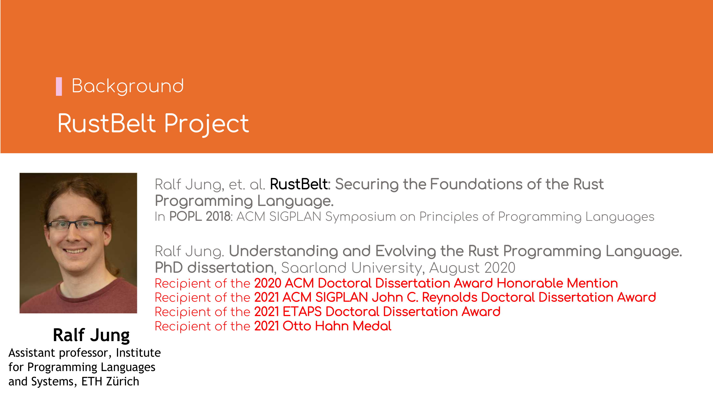
RustBelt项目的主要贡献者之一——Ralf Jung教授 是瑞士苏黎世联邦理工大学（ETH Zürich）的助理教授．其中最主要的论文是2018年发表在POPL杂志上的 《RustBelt: Securing the Foundations of the Rust Programming Language》， 也是Ralf Jung教授博士论文《Understanding and Evolving the Rust Programming Language》 中的第二章．该博士论文荣获多个奖项．

RustBelt定义了\( \lambda_\textrm{Rust} \)-calculus，\( \lambda_\textrm{Rust} \) 完全经机器证明，基于Iris高阶并发分离逻辑开发； 而Iris基于Coq Proof Assistant开发．
Rust类型一览
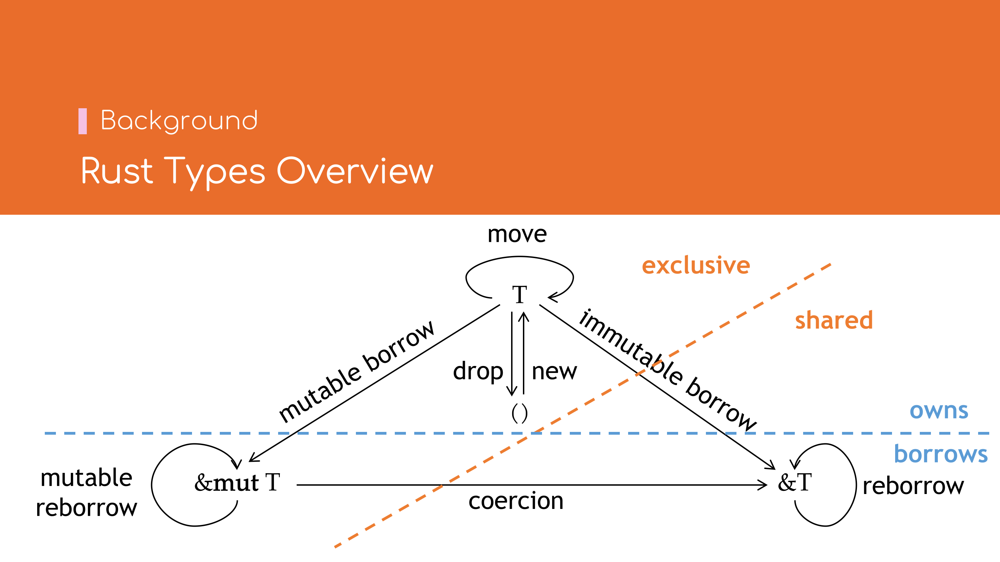
Rust语言的类型具有所有权语义：值类型可以被任意创建、移动、或释放，但每个值最多只能被「使用」 一次——这也是仿射类型系统（Affine Type Systems） 的典型特征．但若只有值类型，由于有只能使用一次的限制，那么很难编写具有实际意义的程序．
所幸Rust语言中也提供了引用类型（Reference），
分为可变引用（Mutable Refernece，&'a mut T）与不可变引用（Immutable Reference，&'a T，也称共享引用，Shared Reference）．
引用类型可以由值类型T借用（Borrow）而得，可变借用（Mutable Borrow）得到可变引用，不可变借用（Immutable Borrow）得到不可变引用．
引用类型也可以再借用（Reborrow）以得到另一个生存期
（Lifetime）更小的引用类型．可变引用也可以隐式转换（Coercion）到不可变引用．
从独占/共享的维度来看，值类型T与可变引用&mut T属于独占类型，即同一代码位置，对同一个值，
只能有唯一、有效的读写权限；而不可变引用&T属于共享类型，即同一代码位置，对同一个值，
允许有多个有效的只读权限．
独占访问与共享访问是互斥的，二者只有其中一个有效．
从所有/借用的维度来看，值类型T持有值的所有权，而可变引用&mut T与不可变引用&T
只有借用权．持所有权者，拥有完整的读、写、移动、释放权限；而持借用权者，
只有读写（可变引用）或只读（不可变引用）权限．
形式化逻辑基础
下面将介绍形式化逻辑中常用的两个基础概念．
霍尔逻辑（Hoare Logic）

霍尔逻辑中的命题\( \lbrace P \rbrace \; C \; \lbrace Q \rbrace \)是指， 对于某一段程序\( C \)，在前置条件\( P \)成立的情况下，若正常执行并停机，那么应当满足后置条件\( Q \)．
霍尔逻辑与程序开发过程中的单元测试的概念类似． 若以单元测试来类比，程序\( C \)相当于单元测试中的被测函数； 前置条件\( P \)相当于单元测试中的输入参数；后置条件\( Q \)相当于单元测试中的断言．
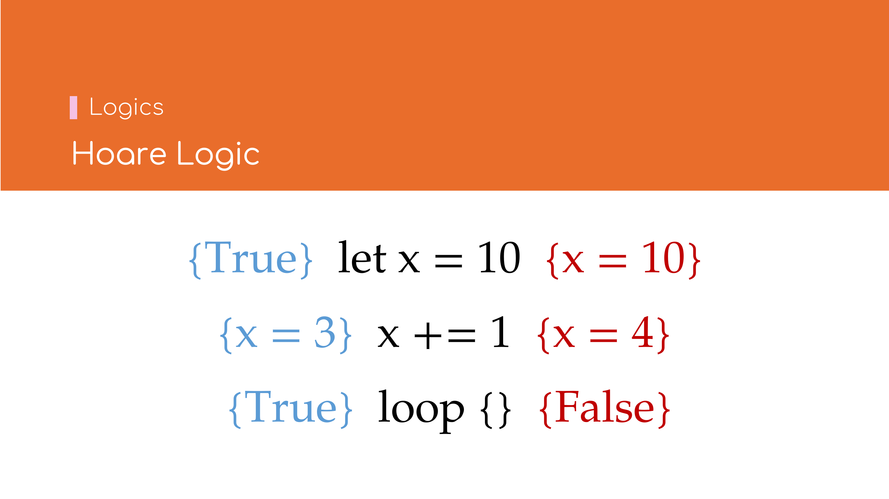
霍尔逻辑示例:
- \[ \lbrace \mathsf{True} \rbrace \; \mathbf{let} \, x = 10 \; \lbrace x = 10 \rbrace \] 表示程序\( \; \mathbf{let} \, x = 10 \)无需任何前置条件，在运行结束后得到后置条件\( x = 10 \)．
- \[ \lbrace x = 3 \rbrace \; x \,+\!= 1 \; \lbrace x = 4 \rbrace \] 表示程序\( x \, + \! = 1 \) 在\( x = 3 \)的前置条件下，运行结束后会得到后置条件\( x = 4 \)．
- \[ \lbrace \mathsf{True} \rbrace \; \mathbf{loop} \, \lbrace \! \rbrace \; \lbrace \mathsf{False} \rbrace \] 表示程序\( \mathbf{loop} \, \lbrace \! \rbrace \)无需任何前置条件，但永不停机（假设它真的停机了，那么会得到一个假命题 \( \mathsf{False} \)即为其后置条件）．
分离逻辑（Separation Logic (Iris)）

分离逻辑可看作霍尔逻辑的扩展，用以表达内存中独占（Ownership）与 不交（Disjointness）的两个性质．
Ownership
命题\( x \mapsto v \)表示内存地址\( x \)唯一地指向了值\( v \)．
Disjointness
命题\( P \ast Q \)表达了\( P \)与\( Q \)在内存空间上不相交．例如给定\( (x \mapsto v) \ast (y \mapsto w) \)， 则知\( x \ne y \)，因为\( x \)与\( y \)不能指代同一内存地址（not alias）．
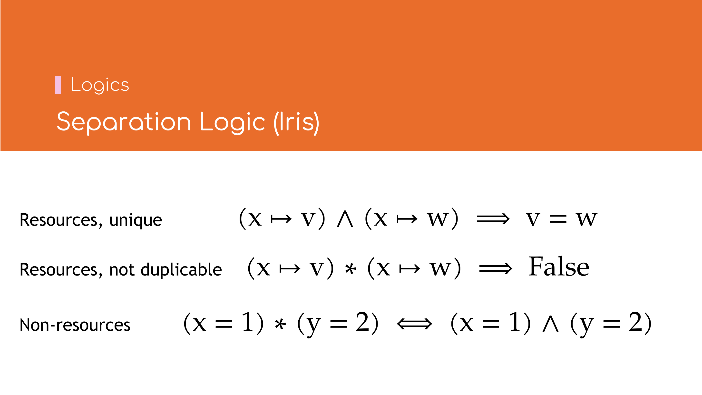
\( \ast \)与\( \land \)的区别:
- \[ (x \mapsto v) \land (x \mapsto w) \implies v = w \] 资源是唯一的，因此仅存在唯一的值\(v\)使得\(x \mapsto v\)．
- \[ (x \mapsto v) \ast (x \mapsto v) \implies \mathsf{False} \] 资源是不可复制的，因此即使是同一个值\(v\)，也不能同时存在两份相同的资源\(x \mapsto v\)．
- \[ (x = 1) \ast (y = 2) \iff (x = 1) \land (y = 2) \] 对于非资源或者永久资源，\( \ast \)与\( \land \)是等价的．
Magic Wand
命题\( P -\!\ast\, Q \)表示若消耗掉资源\( P \)则可获得资源\( Q \)．它与逻辑命题中「蕴含（Implies，\( \Rightarrow \)）」 的概念较为相似，如\( P \ast (P -\! \ast \, Q) \vdash Q \)之于\( P \land (P \Rightarrow Q) \vdash Q \)．
注意此处的资源\(P\)不必包含在资源\(Q\)中．
Accessor资源访问模式（经大幅简化）*
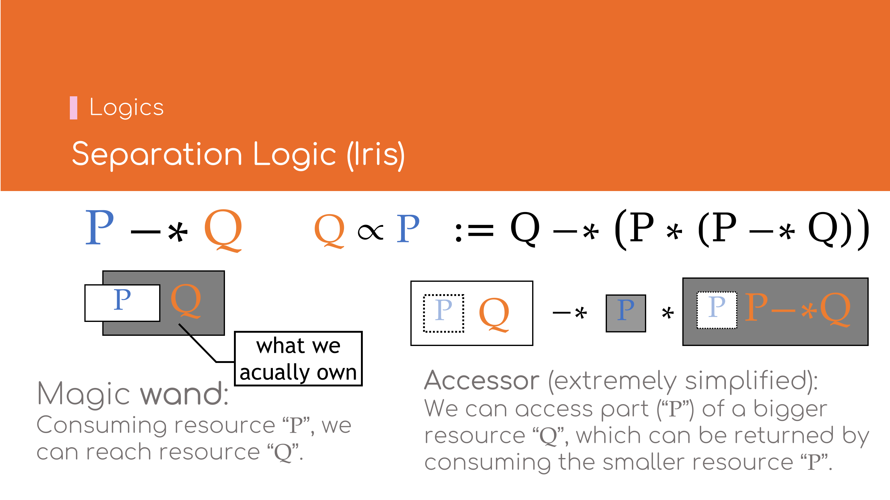
命题\( Q \propto P \, \mathrel{\mathop:}= \, Q -\!\ast\, \big( P \ast (P -\!\ast\, Q) \big)\)表示：在较大的资源\(Q\)中， 可以临时取出包含于\(Q\)的较小资源\(P\)，待\(P\)使用结束后，归还\(P\)则可重新获得原资源\(Q\)．
通常，资源\(Q\)都完全包含资源\(P\)．Accessor是一种访问资源的模式，当某一较大资源不便于直接拆分为两个较小的资源以\(\ast\)相连的形式时， 比较适合使用Accessor模式．
永久资源（Persistent）*

命题\( P \; \mathsf{Persistent} \, \mathrel{\mathop:}= \, P -\!\ast\, P \ast P \)表示资源\(P\)永不耗尽，可任意复制．永久资源又称 知识（Knowledge) 或信息（Information)．如\(1 + 1 = 2\)，\( x = 1 \implies x + 1 = 2 \)， \( \lbrace \mathsf{True} \rbrace \; \mathbf{let} \, x = 10 \; \lbrace x = 10 \rbrace \) 等．注意霍尔逻辑作为复合命题，也属于永久资源．
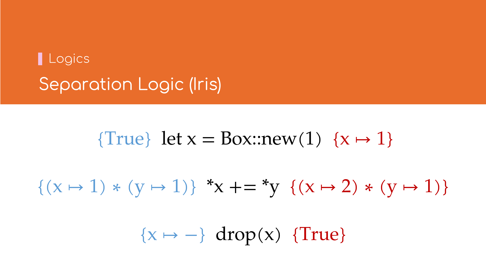
分离逻辑的示例:
- \[ \lbrace \mathsf{True} \rbrace \; \mathbf{let} \, x = \text{Box::new}(1) \; \lbrace x \mapsto 1 \rbrace \]
表示程序\( x = \textrm{Box::new}(1) \)无需任何前置条件，在运行结束后获得资源\( x \mapsto 1 \)1．这里\( \mapsto \)的独占语义
与Rust中
Box类型的语义一致． - \[ \big\lbrace (x \mapsto 1) \ast (y \mapsto 1) \big\rbrace \; {\mbox*} x \,+\!= {\mbox*} y \;
\big\lbrace (x \mapsto 2) \ast (y \mapsto 1) \big\rbrace \]
表示程序\( {\mbox*} x \,+\!= {\mbox*} y \)在前置条件\( \big\lbrace (x \mapsto 1) \ast (y \mapsto 1) \big\rbrace \)下，
运行结束后将得到\( \big\lbrace (x \mapsto 2) \ast (y \mapsto 1) \big\rbrace \)．注意 \( (x \mapsto 1) \ast (y \mapsto 1) \)
表明\(x\)与\(y\)的地址不可能相同，与Rust代码
的语义一致．fn add(x: &mut i32, y: &i32) { *x += *y; } - \[ \lbrace x \mapsto - \rbrace \; \text{drop}(x) \; \lbrace \mathsf{True} \rbrace \] 表示程序\( \text{drop}(x) \)在\( \lbrace x \mapsto - \rbrace \)的前置条件下，运行结束后将消耗掉该资源．其中\( \lbrace x \mapsto - \rbrace \)表示不关心地址\(x\)具体指向什么值．
此处省略了内存释放的部分．
Rust语义模型
\( \lambda_\textrm{Rust} \)的类型系统（部分）1
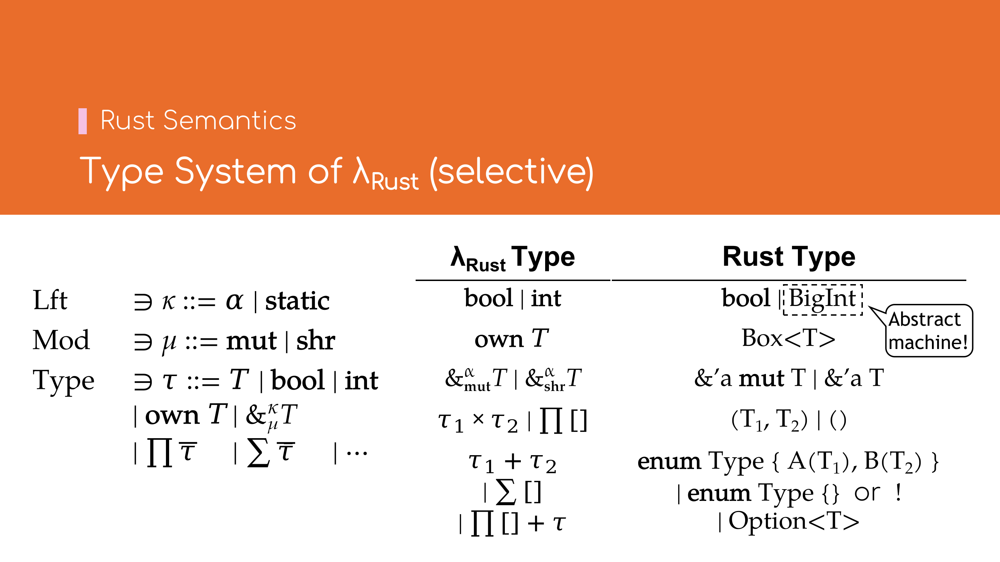
\[ \begin{array}{lll} \text{值} & \text{Val} & \ni v \mathrel{\mathop:\!\!:}= \mathbf{false} \; | \; \mathbf{true} \; | \; z \; | \; \ell \; | \cdots \\ \text{生存期} & \text{Lft} & \ni \kappa \mathrel{\mathop:\!\!:}= \alpha \; | \; \mathbf{static} \\ \text{可变性} & \text{Mod} & \ni \mu \mathrel{\mathop:\!\!:}= \mathbf{mut} \; | \; \mathbf{shr} \\ \text{类型} & \text{Type} & \ni \tau \mathrel{\mathop:\!\!:}= T \; | \; \mathbf{bool} \; | \; \mathbf{int} \\ && \quad | \; \mathbf{own} \, T \; | \; \&_\mu^\kappa T \\ && \quad | \; \prod \bar{\tau} \; | \; \sum \bar{\tau} \; | \cdots \end{array} \]
常用的Rust类型与\( \lambda_\textrm{Rust} \)类型的对照关系如下表所示：
| \( \lambda_\textrm{Rust} \)类型 | Rust类型 |
|---|---|
| \( \mathbf{bool} \; | \; \mathbf{int} \) | bool | BigInt |
| \( \mathbf{own} \, T \) | Box<T> |
| \( \&_{\mathbf{mut}}^\alpha T \; | \; \&_{\mathbf{shr}}^\alpha T \) | &'a mut T | &'a T |
| \( \tau_1 \times \tau_2 \; | \; \prod [] \) | (T1, T2) | () |
| \( \tau_1 + \tau_2 \; | \; \sum [] \) | enum Type { A(T1), B(T2) } | enum Type {} 或 ! |
| \( \prod [] + \tau \) | Option<T> |
其中：
- \( \lambda_\textrm{Rust} \)的\( \mathbf{int} \)类型为忽略机器字长的任意大小的整型；
- \( \lambda_\textrm{Rust} \)的积类型（Product Type，\( \prod \bar{\tau} \)）相当于Rust的元组（Tuple）或结构体（Struct）类型；
- \( \lambda_\textrm{Rust} \)的和类型（Sum Type，\( \sum \bar{\tau} \)）相当于Rust的枚举（Enum）类型；
- \( \lambda_\textrm{Rust} \)的单位积类型（\( \prod [] \)）相当于Rust的单元（Unit）类型（
()）； - \( \lambda_\textrm{Rust} \)的单位和类型（\( \sum [] \)）相当于Rust的空枚举类型（
enum Type {}）或Never类型（!）．
\( \lambda_\text{Rust} \)基于Rust中的MIR，其表达式的语法与Rust不同，更接近\(\lambda\)-calculus的语法．这里简单起见直接用使用类Rust的语法．
类型的\( \text{own} \) Predict

以几个简单类型为例，说明\( \text{own} \) predict的含义：
- \[ [\![ \mathbf{bool} ]\!].\!\text{own}(\bar{v}) \; \mathrel{\mathop:}= \; \bar{v} = [\mathbf{true}] \lor \bar{v} = [\mathbf{false}] \] 即属于布尔类型\(\mathbf{bool}\)的值\(\bar{v}\)要么为单个值\(\mathbf{false}\)，要么为单个值\(\mathbf{true}\)．
- \[ [\![ \mathbf{int} ]\!].\!\text{own}(\bar{v}) \; \mathrel{\mathop:}= \; \exists z \in \mathbb{Z}. \bar{v} = [z] \] 即属于整型\(\mathbf{int}\)的值\(\bar{v}\)为单个整数\(z\)．
- \[ [\![ \tau_1 \times \tau_2 ]\!].\!\text{own}(\bar{v}) \; \mathrel{\mathop:}= \; \exists \bar{v}_1, \bar{v}_2. (\bar{v} = \bar{v}_1 +\!+ \, \bar{v}_2) \ast [\![ \tau_1 ]\!].\!\text{own}(\bar{v}_1) \ast [\![ \tau_2 ]\!].\!\text{own}(\bar{v}_2) \] 即属于积类型\( \tau_1 \times \tau_2 \)的值\(\bar{v}\)为分别属于两个类型\(\tau_1\)与\(\tau_2\)的值 \(\bar{v}_1\)与\(\bar{v}_2\)相连．此处的\(+\!+\)为列表连接（Concentation）运算．
- \[ \left[\!\!\left[ \sum_{i=0}^{n-1} \tau_i \right]\!\!\right].\!\text{own}(\bar{v}) \; \mathrel{\mathop:}= \; \exists i \in \mathbb{N}, \bar{w}. (i < n) \ast (\bar{v} = [i] +\!+ \, \bar{w}) \ast [\![ \tau_i ]\!].\!\text{own}(\bar{w}) \] 即属于和类型\( \sum_{i=1}^n \tau_i \)的值\(\bar{v}\)为一个自然数\(i\)代表其枚举变体（Variant）序号，与一个属于类型 \(\tau_i\)的值\(\bar{w}\)相连．
因此，\( [\![ \tau ]\!].\!\text{own}(\bar{v}) \)表示类型\(\tau\)对值列表\(\bar{v}\)的约束关系2．
联想到Rust中的Copy特质（Trait），
可以定义\( \lambda_\textrm{Rust} \)中的\( \mathsf{Copy} \)语义如下：
\[
\tau: \mathsf{Copy} \; \mathrel{\mathop:}= \; [\![ \tau ]\!].\!\text{own}(\bar{v}) \; \mathsf{Persistent}
\]
即当类型\(\tau\)不含任何资源时，它才是\(\mathsf{Copy}\)的．
省略了多线程的部分．
类型的\( \text{size} \)属性*
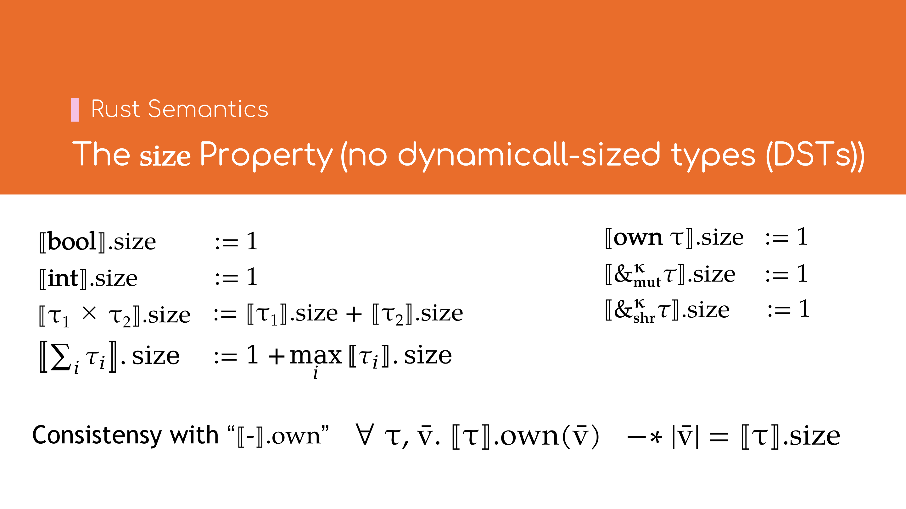
在不考虑动态大小类型（Dynamically Sized Types, DST） 的情况下，每一个Rust类型都确定的内存大小，而在\( \lambda_\textrm{Rust} \)中也有类似的属性．
常见类型的\( \text{size} \)属性如下：
- \( [\![ \mathbf{bool} ]\!].\!\text{size} \mathrel{\mathop:}= 1 \)
- \( [\![ \mathbf{int} ]\!].\!\text{size} \mathrel{\mathop:}= 1 \)
- \( [\![ \mathbf{own} \, \tau ]\!].\!\text{size} \mathrel{\mathop:}= 1 \)
- \( [\![ \&_\mathbf{mut}^\kappa \tau ]\!].\!\text{size} \mathrel{\mathop:}= 1 \)
- \( [\![ \&_\mathbf{shr}^\kappa \tau ]\!].\!\text{size} \mathrel{\mathop:}= 1 \)
- \( [\![ \tau_1 \times \tau_2 ]\!].\!\text{size} \mathrel{\mathop:}= [\![ \tau_1 ]\!].\!\text{size} + [\![ \tau_2 ]\!].\!\text{size} \)
- \( \left[\!\left[ \sum_i \tau_i \right]\!\right].\!\text{size} \mathrel{\mathop:}= 1 + \displaystyle \max_i [\![ \tau_i ]\!].\!\text{size} \)
此外，类型的\( \text{size} \)属性还须与\( \text{own} \) predict所关联的值列表的长度保持一致，即： \[ \forall \tau, \bar{v}. [\![ \tau ]\!].\!\text{own}(\bar{v}) \; -\!\ast \; |\bar{v}| = [\![ \tau ]\!].\!\text{size} \]
独占所有权（Exclusive Ownership）与可变借用
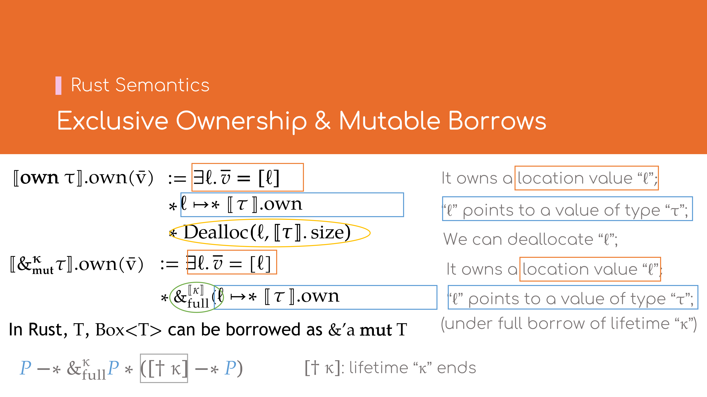
Box<T>
对于Box<T>类型，其\( \text{own} \) predict相比\(\mathbf{int}\)等简单类型更加复杂．
\[
\begin{array}{lll}
[\![ \mathbf{own} \, \tau ]\!].\!\text{own}(\bar{v})
& \mathrel{\mathop:}= \, \exists \ell. \bar{v} = [\ell]
& \bar{v} \text{是单个地址值} \ell \\
& \ast \, \exists \bar{w}. \ell \mapsto \bar{w} \ast [\![ \tau ]\!].\!\text{own}(\bar{w})
& \ell \text{指向属于类型} \tau \text{的值} \bar{w} \\
& \ast \, \mathsf{Dealloc}(\ell, [\![ \tau ]\!].\!\text{size})
& \text{允许释放以} \ell \text{开始，长度为} [\![ \tau ]\!].\!\text{size} \text{的内存}
\end{array}
\]
若将\( \exists \bar{w}. \ell \mapsto \bar{w} \ast [\![ \tau ]\!].\!\text{own}(\bar{w}) \)简写为
\( \ell \mapsto \!\! \ast \, [\![ \tau ]\!].\!\text{own} \) （即此时并不关心具体的值\(\bar{w}\)），那么上式可简化为
\[
[\![ \mathbf{own} \, \tau ]\!].\!\text{own}(\bar{v}) \, \mathrel{\mathop:}= \, \exists \ell. (\bar{v} = [\ell])
\ast (\ell \mapsto \!\! \ast \, [\![ \tau ]\!].\!\text{own})
\ast \mathsf{Dealloc}(\ell, [\![ \tau ]\!].\!\text{size})
\]
&'a mut T
&'a mut T类型与Box<T>很相似，其\( \text{own} \) predict如下：
\[
\begin{array}{lll}
\left[\!\left[ \&_\mathbf{mut}^\kappa \tau \right]\!\right]\!.\!\text{own}(\bar{v})
& \mathrel{\mathop:}= \, \exists \ell. \bar{v} = [\ell]
& \bar{v} \text{是单个地址值} \ell \\
& \ast \, \&_\mathsf{full}^\kappa \big( \ell \mapsto \!\! \ast \, [\![ \tau ]\!].\!\text{own} \big)
& \text{在生存期} \kappa \text{的完全借用范围内，} \ell \text{指向属于类型} \tau \text{的值}
\end{array}
\]
比较\( [\![ \mathbf{own} \, \tau ]\!].\!\text{own}(\bar{v}) \)与 \( \left[\!\left[ \&_\mathbf{mut}^\kappa \tau \right]\!\right]\!.\!\text{own}(\bar{v}) \)可以发现：
- \( \exists \ell. \bar{v} = [\ell] \)表明二者都是单个地址值；
- \( \ell \mapsto \!\! \ast \, [\![ \tau ]\!].\!\text{own} \)表明二者都指向属于类型\(\tau\)的值，但 \( \&_\mathbf{mut}^\kappa \tau \)类型有生存期\( \kappa \)的约束范围．
独占的可变借用
\( \&_\mathsf{full}^\kappa P \) 表示对资源\(P\)的独占借用，生存期为\(\kappa\)．它可通过资源\(P\)任意创建 \[ P \, -\!\ast\; \&_\mathsf{full}^\kappa P \ast \big( [\dagger \kappa] -\!\ast\, P \big) \] 可见，创建\( \&_\mathsf{full}^\kappa P \)需要消耗𠩤来的资源\(P\)；且仅当生存期\(\kappa\)结束时（即获取\([\dagger\kappa]\)后）， 才能再次归还资源\(P\)．
这与在Rust语言中
let mut x: Box<T> = /* ... */;
{
let y: &'a mut T = &mut *x; // 'a <-+
// `x` is not accessible |
use(y); // |
} // `'a` ends <------------------------+
access(x); // `x` is accessible again
可变借用&mut *x得到&'a mut T的语义一致，即在y: &'a mut T存续期间，原有x的值不可再访问；仅当'a结束后，再重新归还x的所有权．
生存期（Lifetime）*
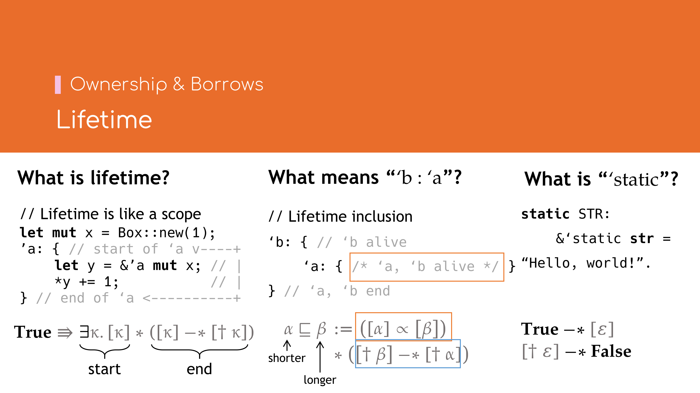
上文中提到生存期结束时的\( [\dagger \kappa] \) token，接下来将简单介绍一下\( \lambda_\textrm{Rust} \)中生存期的表示．
什么是生存期？
C++或其他编程语言中，生存期一般是指变量或对象从创建开始到销毁的一段时间， 是运行时（Runtime）的概念．C++中生存期偶尔也指RAII对象所属的作用域， 因为这类对象的创建与释放与其作用域绑定在一起．
而Rust中的生存期概念则有所不同，更多是指引用类型或者借用的有效期，是抽象语法树 （Abstract Syntax Tree，AST）或者控制流图（Control-Flow Graph，CFG）上的概念而非运行时的概念．
最简单的理解是把生存期近似看作作用域（scope）3，如以下代码段所示
let mut x = Box::new(1);
'a: {
let y = &'a mut x; // start of 'a <--+
*y += 1; // |
} // end of `'a` <-----------------------+
生存期随新的作用域打开而开始，随作用域关闭而结束．
在\( \lambda_\textrm{Rust} \)中，生存期的开始及结束与Rust类似： \[ \begin{array}{lll} \mathsf{True} & -\!\ast\, \exists \kappa. [\kappa] & \text{生存期} \kappa \text{开始时，新建一个token } [\kappa] \text{，该token代表生存期} \kappa \text{存活} \\ & \ast\; \big([\kappa] -\!\ast\, [\dagger \kappa]\big) & \text{生存期} \kappa \text{结束时，消耗原token } [\kappa] \text{后，得到生存期结束的token } [\dagger \kappa] \end{array} \] 这里生存期结束的token\([\dagger \kappa]\)是永久的，即 \[ [\dagger \kappa] \; \mathsf{Persistent} \] 这是因为生存期一旦结束，便已成定局，所以此处的token将永久存在，不被消耗．
后来Rust引入了非词法作用域生存期（Non-Lexical Lifetime，NLL），使得 生存期不再与作用域绑定．
生存期的包含关系（Lifetime Inclusion，'b: 'a）
在Rust中，'b: 'a表示生存期'b比'a更长（或等长），这是因为通常情况下带更长生存期类型是带更短生存期类型的子类型4，如当'b: 'a
时，&'b T是&'a T的子类型
（Subtype），即&'b T: &'a T．
生存期的包含关系是一个偏序关系 （Partial Order Relationship），即满足
- 自反性（Reflexive），对任意的
'a都有：'a: 'a； - 传递性（Transitive），若
'a: 'b且'b: 'c那么有'a: 'c． - 反对称性（Anti-Symmetric），若
'a: 'b且'b: 'a那么'a = 'b.
不同于全序关系
（Total Order）的是，并非任意两个生存期都存在包含关系，如以下的'a与'b既不满足'a: 'b也不满足'b: 'a．
'a: { } // lifetime `'a`
'b: { } // lifetime `'b`
当我们提到生存期'b比'a更长时，一般有两层含义．如下列代码段所示
'b: { // `'b` alive
'a: { // `'a`, `'b` alive
// ...
} // `'a` ends
} // `'a`, `'b` end
- 若较短的生存期
'a存活，那么较长的生存期'b也一定存活； - 若较长的生存期
'b结束，那么较短的生存期'a也一定结束．
在\( \lambda_\textrm{Rust} \)中，生存期的包含关系略微有点复杂，但也与上述两层含义一一对应 \[ \begin{array}{ll} \alpha \sqsubseteq \beta \mathrel{\mathop:}= \\ \quad [\alpha] \propto [\beta] & \text{拥有较短生存期} \alpha \text{的token时，可通过Accessor模式临时获取较长生存期} \beta \text{的token} \\ \quad \ast\, ([\dagger \beta] -\!\ast\, [\dagger \alpha]) & \text{当较长的生存期} \beta \text{结束时，也可得知较短的生存期} \alpha \text{也一定结束} \end{array} \] 注意这里较短的生存期token是「更大」的资源．因为当生存期存活时，可以推断出任何比它长的生存期都存活，也即上述定义中的第一项，可以通过 Accessor资源访问模式来获取任意一个比它更长的生存期的token．
这里指协变（Covariant）类型中的生存期参数．
静态生存期（'static）
在Rust语言中，有一个特殊的生存期'static，它比其他任何生存期都更长，即在整个程序中任意作用域（包括静态作用域）范围内都存活．
static STR: &'static str = "Hello, world!".
在\( \lambda_\textrm{Rust} \)中，以\(\varepsilon\)代指静态生存期，则有 \[ \begin{array}{ll} \mathsf{True} -\!\ast\, [\varepsilon] & \text{可任意获取生存期} \varepsilon \text{存活的token} \\ [\dagger \varepsilon] -\!\ast\, \mathsf{False} & \text{生存期} \varepsilon \text{永不结束} \end{array} \]
生存期token的拆分
由于生存期token不属于永久资源，即不可复制，但很多时候生存期的token需要在多处使用 （如共属于同一作用域的多个引用类型），因此需要一种生存期token的复用方式．
Iris中通常使用有理拆分的方式，将一个完整的生存期token\([\kappa]\)，拆分成多个不完整的token，从而使得同一个生存期token可以在多处使用．
赋予每个token一个有理份额\(q\)，即\([\kappa]_q\)，其中\(q\)为不大于\(1\)的正有理数．当\(q = 1\)时，即\([\kappa]_1\)为完整 token；当\(q < 1\)时，\([\kappa]_q\)为不完整token．拆分规则如下5： \[ \forall \kappa. \forall q, q' \in \mathbb{Q}_{+}. q + q' \le 1 \implies [\kappa]_{q + q'} \ast\!-\!\ast\, [k]_q \ast [k]_{q'} \]
相应地，前文提到的生存期的几个规则将变为： \[ \mathsf{True} -\!\ast\, \exists \kappa. [\kappa]_1 \ast \big([\kappa]_1 -\!\ast\, [\dagger \kappa]\big) \] 即生存期的开始与结束仍然需要完整的token．令\( \mathbb{Q}_1 \mathrel{\mathop:}= \mathbb{Q} \cap (0, 1] \)， \[ \begin{array}{ll} \alpha \sqsubseteq \beta & \mathrel{\mathop:}= \, (\forall q \in \mathbb{Q}_1. [\alpha]_q) \propto (\forall q' \in \mathbb{Q}_1. [\beta]_{q'}) \\ & \ast\, ([\dagger \beta] -\!\ast\, [\dagger \alpha]) \end{array} \] 此时可使用不完整token，并且在Accessor资源访问模式中允许任意变换token的份额．
共享所有权（Shared Ownership）与不可变借用*

&'a T与类型的\( \text{shr} \) Predict
&'a T类型与&'a mut T差别较大，\( \lambda_\textrm{Rust} \)引入了\( \text{shr} \) predict代表值的共享关系，
\( \&_\mathbf{shr}^\kappa \tau \)类型的\( \text{own} \) predict可定义如下：
\[
\begin{array}{lll}
\left[\!\left[ \&_\mathbf{shr}^\kappa \tau \right]\!\right]\!.\!\text{own}(\bar{v})
& \mathrel{\mathop:}= \, \exists \ell. \bar{v} = [\ell]
& \bar{v} \text{是单个地址值} \ell \\
& \ast \, [\![ \tau ]\!].\!\text{shr}(\kappa, \ell)
& \text{在生存期} \kappa \text{存活的范围内，} \ell \text{共享了属于类型} \tau \text{的值}
\end{array}
\]
由于Rust中的&'a T: Copy，因此\( \&_\mathbf{shr}^\kappa \tau \)类型的\( \text{own} \) predict须是永久的，于是任意类型\(\tau\)的
\( \text{shr} \) predict都须是永久的，即
\[ \forall \tau, \kappa, \ell. [\![ \tau ]\!].\!\text{shr}(\kappa, \ell) \; \mathsf{Persistent} \]
此外，\( \text{shr} \) predict还须支持生存期的包含关系，有
\[
\forall \tau, \kappa, \kappa', \ell. \kappa' \sqsubseteq \kappa
\ast [\![ \tau ]\!].\!\text{shr}(\kappa, \ell)
-\!\ast\, [\![ \tau ]\!].\!\text{shr}(\kappa', \ell)
\]
表明&'a T关于'a协变，即当'b: 'a时，有&'b T: &'a T．
\( [\![ \tau ]\!].\!\text{shr}(\kappa, \ell) \)的实现非常复杂，因篇幅所限，此处不再赘述，有兴趣者可参阅RustBelt论文中的第四章：Lifetime logic．
&'a mut T到&'a T的隐式转换
为了支持Rust中&'a mut T到&'a T的隐式转换，\( \lambda_\textrm{Rust} \)引入了下列规则：
\[
\forall \tau, \kappa, \ell, q \in \mathbb{Q}_1.
\&_\mathsf{full}^\kappa \big( \ell \mapsto \!\! \ast \, [\![ \tau ]\!].\!\text{own} \big)
\ast [k]_q -\!\ast\, [\![ \tau ]\!].\!\text{shr}(\kappa, \ell) \ast [\kappa]_q
\]
因此只要生存期\(\kappa\)存活，那么类型\( \&_\mathbf{mut}^\kappa \tau \)可以转换为类型\( \&_\mathbf{shr}^\kappa \tau \)，转换后生存期\(\kappa\)仍然存活．
\(P \ast\!-\!\ast Q\)为\( (P -\!\ast\, Q) \ast (Q -\!\ast\, P) \)的简写．
小结*
\( \lambda_\textrm{Rust} \)中类型的语义模型到此结束．每个类型\(\tau\)有三个属性或predict \[ Type \mathrel{\mathop:}= \left\lbrace \begin{array}{ll} \text{size} : \mathbb{N} & \text{属于类型} \tau \text{的值列表长度} \\ \text{own} : List(Val) \to iProp & \text{类型} \tau \text{对持所有权的值的资源约束} \\ \text{shr} : Lft \times Loc \to iProp & \text{类型} \tau \text{对共享值的约束} \\ \end{array} \right\rbrace \] 其中\(List\)指列表，\(Loc\)指位置值，\(iProp\)指Iris资源．
但除此之外，类型的语义模型还要求满足以下条件 \[ SemType \mathrel{\mathop:}= \left\lbrace \tau \in Type \middle| \begin{array}{ll} \left( \forall \bar{v}. [\![ \tau ]\!].\!\text{own}(\bar{v}) -\!\ast\, |\bar{v}| = [\![ \tau ]\!].\!\text{size} \right) \; \land & \text{size与own的一致性} \\ \left( \forall \kappa, \ell. [\![ \tau ]\!].\!\text{shr}(\kappa, \ell) \; \mathsf{Persistent} \right) \; \land & \text{shr的永久性} \\ \left( \begin{array}{l} \forall \kappa, \kappa', \ell. \kappa' \sqsubseteq \kappa \ast [\![ \tau ]\!].\!\text{shr}(\kappa, \ell) \\ \quad -\!\ast\, [\![ \tau ]\!].\!\text{shr}(\kappa', \ell) \end{array} \right) \land & \text{shr的单调性} \\ \left( \begin{array}{l} \forall \kappa, \ell, q \in \mathbb{Q}_1. \&_\mathsf{full}^\kappa \big( \ell \mapsto \!\! \ast \, [\![ \tau ]\!].\!\text{own} \big) \ast [k]_q \\ \quad -\!\ast\, [\![ \tau ]\!].\!\text{shr}(\kappa, \ell) \ast [\kappa]_q \end{array} \right) & \text{own可转换到shr} \end{array} \right\rbrace \] 以上便是\( \lambda_\textrm{Rust} \)类型语义模型的全部定义．在此基础上，若欲支持多线程，可在\(\text{own}\)与\(\text{shr}\) predicts中新增线程ID参数． 涉及多线程的借用语义将更加复杂，在此不再赘述，有兴趣者可自行参阅RustBelt论文.
示例Rc
下面以Rc类型为例，介绍其语义模型与实现．
Rc的语义模型
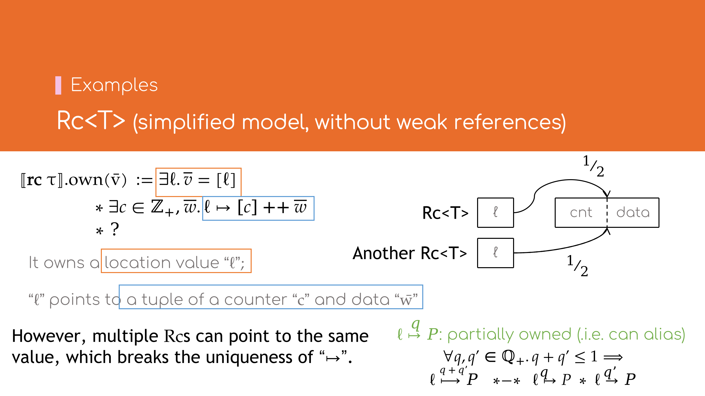
若不考虑弱引用，Rc的内存布局可以看作一个指针，指向一个含引用计数与承载数据的内存地址．
在\( \lambda_\text{Rust} \)中，引入\( \mathbf{rc} \, \tau \)类型以代表Rc<T>类型，若按以下方式定义
\[
\begin{array}{lll}
[\![ \mathbf{rc} \, \tau ]\!].\!\text{size}
& \mathrel{\mathop:}= 1 \\
[\![ \mathbf{rc} \, \tau ]\!].\!\text{own}(\bar{v})
& \mathrel{\mathop:}= \, \exists \ell. \bar{v} = [\ell]
& \bar{v} \text{是单个地址值} \ell \\
& \ast \, \exists c \in \mathbb{Z}_{+}, \bar{w}. \ell \mapsto c :: \bar{w}
& \ell \text{指向引用计数} c \text{与类型} \tau \text{的值} \bar{w} \\
& \ast \, ? & \text{应当如何表示共享所有权的值的约束？}
\end{array}
\]
（其中\(v :: l\)表示将值\(v\)插入列表\(l\)的首部而得的新列表），但这样的问题在于：
- \( \ell \mapsto c :: \bar{w} \)是独占所有权的，不能满足多个\( \mathbf{rc} \, \tau \)类型共享所有权的要求；
- 考虑到引用计数的存在，并不能简单地用\( [\![ \tau ]\!].\!\text{own}(\bar{w}) \)来\( \bar{w} \)：
- 当\(c = 1\)时，\( \mathbf{rc} \, \tau \)表现为独占所有权，其语义与\( \mathbf{own} \, \tau \)类型一致；
- 当\(c > 1\)时，\( \mathbf{rc} \, \tau \)表现为共享所有权．
对于1，可以参考生存期token拆分，为\( \ell \mapsto P \)赋予有理数份额\(q\)， 即\( \ell \overset{q}{\mapsto} P \)以表达部分所有权的语义．所有权拆分的方式如下 \[ \forall q, q' \in \mathbb{Q}_1, \ell, P. q + q' \le 1 \implies \ell \overset{q + q'}{\longmapsto} P \; \ast\!-\!\ast \; (\ell \overset{q}{\mapsto} P) \ast (\ell \overset{q'}{\mapsto} P) \]
\(\text{shared_own}\) Predict1

将\( \ell \mapsto c :: \bar{w} \)拆分为部分份额后，还须建立部分所有权份额\(q\)与引用计数\(c\)之间的约束．简单起见，引入 \[ \text{shared_own} \mathrel{\mathop:}= SemType \times Loc \times List(Val) \times \mathbb{N}_{+} \times \mathbb{Q}_1 \to iProp \] 再重新定义\( [\![ \mathbf{rc} \, \tau ]\!]\!.\!\text{own} \)如下 \[ \begin{array}{ll} [\![ \mathbf{rc} \, \tau ]\!]\!.\!\text{own}(\bar{v}) & \mathrel{\mathop:}= \, \exists \ell. \bar{v} = [\ell] \\ & \ast \, \exists c \in \mathbb{Z}_{+}, q \in \mathbb{Q}_1, \bar{w}. \ell \overset{q}{\mapsto} c :: \bar{w} \\ & \ast \, \text{shared_own}(\tau, \ell, \bar{w}, c, q) \end{array} \]
考察引用计数\(c\)与部分所有权份额\(q\)的关系：
- 当\(c = 1\)时，\(q = 1\)，且\( \mathbf{rc} \, \tau \)的语义与\( \mathbf{own} \, \tau \)一致，有 \[ \forall \tau, \ell, \bar{w}. \text{shared_own}(\tau, \ell, \bar{w}, 1, 1) \; \ast\!-\!\ast \; [\![ \tau ]\!].\!\text{own}(\bar{w}) \ast \, \mathsf{Dealloc}(\ell, 1 + [\![ \tau ]\!].\!\text{size}) \]
- 当引用计数\(c\)加一时，同时可将份额为\(q + q'\)的部分所有权拆分为两个更小份额\(q\)与\(q'\)的部分所有权 \[ \begin{array}{l} \forall q, q' \in \mathbb{Q}_1, c, c' \in \mathbb{Z}_{+}, \tau, \ell, \bar{w}. q + q' \le 1 \implies \\ \quad \text{shared_own}(\tau, \ell, \bar{w}, c, q + q') \ast\!-\!\ast \\ \quad \text{shared_own}(\tau, \ell, \bar{w}, c + 1, q) \\ \quad \ast\, \text{shared_own}(\tau, \ell, \bar{w}, c + 1, q') \end{array} \]
- 当\(c > 1\)时，\( \mathbf{rc} \, \tau \)表现为共享所有权语义，该语义过于复杂，涉及Iris里面的高阶Ghost State的概念，此处暂不展开．
Rc的实现

下面以Rc类型中最常用的两个函数Rc::new与Rc::clone为例，介绍如何使用\( \lambda_\text{Rust} \)验证其正确性．
Rc::new的实现*

Rc::new简化后的逻辑如下
fn Rc::<T>::new(w: T) -> Rc<T> {
let x = Box::new(Cons(1, w));
x.into()
}
即先创建一个引用计数为1，值为w的Box，然后再将其转换为Rc（略去指针的实现细节，此处的类型转换可视为No-op）．
求证： \[ \big\lbrace [\![ \tau ]\!].\!\text{own}(\bar{w}) \big\rbrace \; \mathbf{let} \, x = \text{Rc::new}(\bar{w}) \; \big\lbrace [\![ \mathbf{rc} \, \tau ]\!].\!\text{own}([x]) \big\rbrace \]
证明（概要）：
展开\( \text{Rc::new} \)及\( [\![ \mathbf{rc} \, \tau ]\!].\!\text{own}([x]) \)得 \[ \begin{array}{lr} \big\lbrace [\![ \tau ]\!].\!\text{own}(\bar{w}) \big\rbrace \\ \quad \mathbf{let} \, x = \text{Box::new}(1 :: \bar{w}) \, ; & (1) \\ \quad \mathbf{let} \, x = x.\!\text{into}() & (2) \\ \left\lbrace \begin{array}{l} \exists c \in \mathbb{Z}_{+}, q \in \mathbb{Q}_1. \left( x \overset{q}{\mapsto} c :: \bar{w} \right) \ast \\ \text{shared_own}(\tau, x, \bar{w}, c, q) \end{array} \right\rbrace & (3) \end{array} \] 对(1)应用\( [\![ \mathbf{own} \, \tau ]\!].\!\text{own} \)的定义，有 \[ \begin{array}{lr} \big\lbrace [\![ \tau ]\!].\!\text{own}(\bar{w}) \big\rbrace \\ \quad \mathbf{let} \, x = \text{Box::new}(1 :: \bar{w}) \, ; \\ \left\lbrace \begin{array}{l} (x \mapsto 1 :: \bar{w}) \ast [\![ \tau ]\!].\!\text{own}(\bar{w}) \, \ast \\ \mathsf{Dealloc}(x, 1 + [\![ \tau ]\!].\!\text{size}) \end{array} \right\rbrace & (4) \end{array} \] 对(2), (4)式应用\( \text{shared_own} \)的第一个性质，得 \[ \begin{array}{lr} \left\lbrace \begin{array}{l} (x \mapsto 1 :: \bar{w}) \ast [\![ \tau ]\!].\!\text{own}(\bar{w}) \, \ast \\ \mathsf{Dealloc}(x, 1 + [\![ \tau ]\!].\!\text{size}) \end{array} \right\rbrace & (4) \\ \quad \mathbf{let} \, x = x.\!\text{into}() & (2) \\ \left\lbrace \begin{array}{l} \left( x \overset{1}{\mapsto} 1 :: \bar{w} \right) \ast \text{shared_own}(\tau, x, \bar{w}, 1, 1) \end{array} \right\rbrace & (5) \end{array} \] (5)式中令\(c = 1, q = 1\)得 \[ \begin{array}{lr} \left\lbrace \begin{array}{l} \exists q = 1, c = 1. \left( x \overset{q}{\mapsto} c :: \bar{w} \right) \ast \text{shared_own}(\tau, x, \bar{w}, c, q) \end{array} \right\rbrace & (5') \end{array} \] (3)得证．\(\square\)
Rc::clone的实现
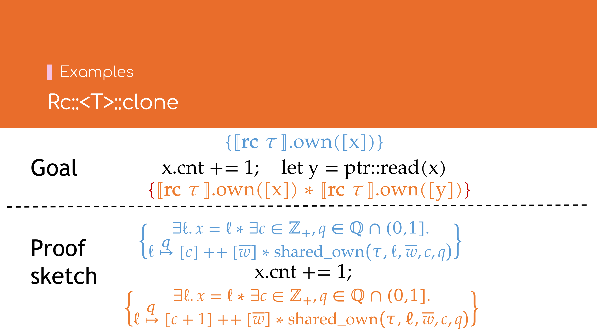
Rc::clone简化后的逻辑如下
fn Rc::<T>::clone(x: &Rc<T>) -> Rc<T> { unsafe {
(*x).0 += 1;
let y = ptr::read(x);
y
} }
即首先将其引用计数自增1，然后再将x的指针浅复制一份得到y．
求证： \[ \big\lbrace [\![ \mathbf{rc} \, \tau ]\!].\!\text{own}([x]) \big\rbrace \; \mathbf{let} \, y = x.\!\text{clone}() \; \big\lbrace [\![ \mathbf{rc} \, \tau ]\!].\!\text{own}([x]) \ast [\![ \mathbf{rc} \, \tau ]\!].\!\text{own}([y]) \big\rbrace \]
证明（概要）：
展开\( \text{Rc::clone} \)，\( [\![ \mathbf{rc} \, \tau ]\!].\!\text{own}([x]) \) 及 \( [\![ \mathbf{rc} \, \tau ]\!].\!\text{own}([y]) \)得 \[ \begin{array}{lr} \left\lbrace \begin{array}{l} \exists c \in \mathbb{Z}_{+}, q \in \mathbb{Q}_1. \left( x \overset{q}{\mapsto} c :: \bar{w} \right) \ast \\ \text{shared_own}(\tau, x, \bar{w}, c, q) \end{array} \right\rbrace & (1) \\ \quad ({\mbox*}x).0 \, +\!= 1 \, ; & (2) \\ \quad \mathbf{let} \, y = \text{ptr::read}(x) & (3) \\ \left\lbrace \begin{array}{l} \exists c', c'' \in \mathbb{Z}_{+}, q', q'' \in \mathbb{Q}_1. \\ \left( x \overset{q'}{\mapsto} c' :: \bar{w} \right) \ast \text{shared_own}(\tau, x, \bar{w}, c', q') \; \ast \\ \left( y \overset{q''}{\mapsto} c'' :: \bar{w} \right) \ast \text{shared_own}(\tau, y, \bar{w}, c'', q'') \end{array} \right\rbrace & (4) \\ \end{array} \] 由(1), (2)式得 \[ \begin{array}{lr} \left\lbrace \begin{array}{l} \exists c \in \mathbb{Z}_{+}, q \in \mathbb{Q}_1. \left( x \overset{q}{\mapsto} c :: \bar{w} \right) \ast \\ \text{shared_own}(\tau, x, \bar{w}, c, q) \end{array} \right\rbrace & (1) \\ \quad ({\mbox*}x).0 \, +\!= 1 \, ; & (2) \\ \left\lbrace \begin{array}{l} \exists c \in \mathbb{Z}_{+}, q \in \mathbb{Q}_1. \left( x \overset{q}{\mapsto} (c + 1) :: \bar{w} \right) \ast \\ \text{shared_own}(\tau, x, \bar{w}, c, q) \end{array} \right\rbrace & (5) \\ \end{array} \] 现须证 \[ \begin{array}{lr} \left\lbrace \begin{array}{l} \exists c \in \mathbb{Z}_{+}, q \in \mathbb{Q}_1. \left( x \overset{q}{\mapsto} (c + 1) :: \bar{w} \right) \ast \\ \text{shared_own}(\tau, x, \bar{w}, c, q) \end{array} \right\rbrace & (5) \\ \quad \mathbf{let} \, y = \text{ptr::read}(x) & (3) \\ \left\lbrace \begin{array}{l} \exists c', c'' \in \mathbb{Z}_{+}, q', q'' \in \mathbb{Q}_1. \\ \left( x \overset{q'}{\mapsto} c' :: \bar{w} \right) \ast \text{shared_own}(\tau, x, \bar{w}, c', q') \; \ast \\ \left( y \overset{q''}{\mapsto} c'' :: \bar{w} \right) \ast \text{shared_own}(\tau, y, \bar{w}, c'', q'') \end{array} \right\rbrace & (4) \\ \end{array} \]

应用\( \text{shared_own} \)的第二个性质，将(5)式中的\( \text{shared_own}(\tau, x, \bar{w}, c, q) \)拆分为两个\( {}^q/{}_2 \)的份额 \[ \begin{array}{l} \text{shared_own}(\tau, x, \bar{w}, c, q) \; -\!\ast \\ \quad \text{shared_own}(\tau, x, \bar{w}, c + 1, {}^q/{}_2) \; \ast \\ \quad \text{shared_own}(\tau, x, \bar{w}, c + 1, {}^q/{}_2) \end{array} \] 再将\( x \overset{q}{\mapsto} (c + 1) :: \bar{w} \)也拆成两个\( {}^q/{}_2 \)的份额 \[ x \overset{q}{\mapsto} (c + 1) :: \bar{w} \; -\!\ast \; \left( x \overset{{}^q/{}_2}{\mapsto} (c + 1) :: \bar{w} \right) \ast \left( x \overset{{}^q/{}_2}{\mapsto} (c + 1) :: \bar{w} \right) \]

得 \[ \begin{array}{lr} \left\lbrace \begin{array}{l} \exists c \in \mathbb{Z}_{+}, q \in \mathbb{Q}_1. \\ \left( x \overset{{}^q/{}_2}{\mapsto} (c + 1) :: \bar{w} \right) \ast \left( x \overset{{}^q/{}_2}{\mapsto} (c + 1) :: \bar{w} \right) \ast \\ \text{shared_own}(\tau, x, \bar{w}, c + 1, {}^q/{}_2) \; \ast \\ \text{shared_own}(\tau, x, \bar{w}, c + 1, {}^q/{}_2) \end{array} \right\rbrace & (5') \end{array} \]
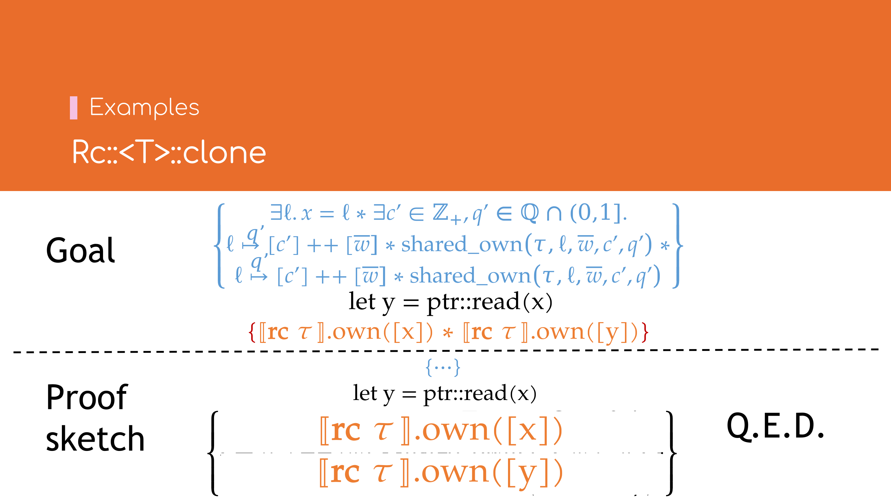
令\( q' = q'' = {}^q/{}_2 \)，\(c' = c'' = c + 1\)，则 \[ \begin{array}{lr} \left\lbrace \begin{array}{l} \exists c', c'' = c + 1, q', q'' = {}^q/{}_2. \\ \left( x \overset{q'}{\mapsto} c' :: \bar{w} \right) \ast \text{shared_own}(\tau, x, \bar{w}, c', q') \; \ast \\ \left( x \overset{q''}{\mapsto} c'' :: \bar{w} \right) \ast \text{shared_own}(\tau, x, \bar{w}, c'', q'') \end{array} \right\rbrace & (5'') \\ \quad \mathbf{let} \, y = \text{ptr::read}(x) & (3) \\ \left\lbrace \begin{array}{l} \exists c', c'' \in \mathbb{Z}_{+}, q', q'' \in \mathbb{Q}_1. \\ \left( x \overset{q'}{\mapsto} c' :: \bar{w} \right) \ast \text{shared_own}(\tau, x, \bar{w}, c', q') \; \ast \\ \left( y \overset{q''}{\mapsto} c'' :: \bar{w} \right) \ast \text{shared_own}(\tau, y, \bar{w}, c'', q'') \end{array} \right\rbrace & (4) \\ \end{array} \] (3)式中的\( \text{ptr::read} \)为浅复制，因此上式不难得证．\(\square\)
Polonius学习笔记
写于2022年1月21日。
Polonius是一个推理引擎，基于MIR层输入的控制流图、变量信息、借用信息、生存期约束信息，推导出程序中是否有语句违反Rust对于借用的约定规则，以便编译器报告语法错误，并尽可能向用户提供有帮助的改进建议。
基本概念
Polonius的输入信息，通过「原子式（Atom）」与「输入事实（AllFacts）」两个概念来表达。原子式是输入信息的概念分类，而输入事实是一系列给定的真命题。
Polonius引擎则基于这些真命题，按照一系列的分析规则，推导出矛盾（即错误）信息，再返回给编译器以报告编译错误。（无矛盾信息生成时，视为借用检查通过，将不会产生编译错误。）
分析流程
- 初始化分析：计算MIR各个位置（Point）处变量（Variable）的初始化、逆初始化（被移动）的状态，与该处发生「移动后访问」错误的路径（Path）（若有）。
- 存活性分析：计算MIR各个位置（Point）处，分别有哪些借用源（Origin）存活。
- 借债分析：计算MIR各个位置（Point）处，存在矛盾（存活且失效）的借债（Loan）；并计算在哪些位置（Point）处，产生了与外部定义的生存期约束（SubOrigin, Origin）相矛盾的约束。前者用于报告违反借用规则的错误，后者用于报告可能存在悬垂引用的错误。
原子式与输入
写于2022年1月21日。
原子式（Atom）
原子式即分析过程中用到的输入信息的分类。
Variable
由用户定义的变量。如let x, y;中的x、y。
Path
结构体、元组、数组等变量的字段访问路径。如a.b、x.y.z.0、s[0]等（数组不区分不同下标）。
Point
控制流图（Control-flow Graph，CFG）中的某个语句。每条语句被拆成Start和Mid两个节点，
Start：执行该语句前；Mid：执行该语句时。
Loan
借债，对应Rust中的借用（borrow）概念。如let y = &x;中的&x。
Origin
借用源，对应Rust中的生存期（lifetime）概念。如let x: &'a i32;中的'a。
Origin应理解为「所有引用到该Origin的Loan集合」。
输入事实（AllFacts）
输入来源于MIR。主要包含CFG的执行到达关系图；变量的赋值、移动、访问情况；借债的发生、清除、失效信息；因借用产生、或外部定义的笁存期及其约束条件等信息。
cfg_edge
cfg_edge(SourcePoint, TargetPoint)，一条控制流图的边，表示SourcePoint的下一条执行点为TargetPoint。
loan_issued_at
loan_issued_at(Origin, Loan, Point)表示在位置Point处发生了借债Loan，其生存期为Origin。
placeholder（与universal_region）
placeholder(Origin, Loan)表示外部定义的生存期（如fn max<'a>(a: &'a str, b: &'a str) -> &'a str中的'a，及期关联的Loan。这些生存期也是函数签名的一部份。另外，由于它的Loan对借债检查而言是未知的，不能作任何假设，因此称之为「占位符」（placeholder）。
universal_region(Origin)与placeholder类似，单指由函数签名定义的生存期，不带具体的Loan。
loan_killed_at
loan_killed_at(Loan, Point)指某个借债Loan在位置Point处被清除。表明该借债Loan对应的路径Path在Point处被赋值或覆写。
例如
#![allow(unused)] fn main() { let mut a = 1; let mut b = 2; let mut q = &mut a; let r = &mut *q; // `Loan` L0，此处借用了`*q` // `q` 不能再使用，只能通过`r`访问 q = &mut b; // L0被清除 // 此后，`q`与`r`可以继续使用 }
q再次赋值后，Loan L0 被清除。Rustc在进入借用检查之前会将这样的关系计算好，保存在loan_killed_at中。之后，在借债分析时，loan_killed_at中的Point将阻止相应的Loan在CFG中传播。
subset_base
subset_base(SubOrigin, Origin, Point)表示，在位置Point处，有一条SubOrigin: Origin的约束（即SubOrigin应当长存于（outlives）Origin。
loan_invalidated_at
loan_invalidated_at(Point, Loan)表明在Point处失效。
借用有共享（shared）与可变（mutable）两种。共享借用只能用于读取，不能写入或修改；可变借用必须独占，保证不能有对同一Path的借用。否则，视为借用失效，失效的借债将保存在loan_invalidated_at关系中。
known_placeholder_subset
known_placeholder_subset(SubOrigin, Origin)用于表示函数签名处定义的生存期约束。
初始化分析（Initialization Analysis）
写于2022年1月21日。
初始化分析主要计算出经传递后的Path读写、移动之处，变量的初始化、移动情况，并找出因移动而导致的错误（即试图访问被移动或部分移动的变量）。
1. 将路径的读写、移动情况传递至其子路径
所有路径（除入参外）在刚进入函数体内时，均视为已移动。
输入
path_moved_at (Path, Point) :- path_moved_at_base (Path, Point).
path_assigned_at(Path, Point) :- path_assigned_at_base(Path, Point).
path_accessed_at(Path, Point) :- path_accessed_at_base(Path, Point).
ancestor_path(ParentPath, ChildPath) :- child_path(ChildPath, ParentPath).
path_begin_with_var(Path, Variable) :- path_is_var(Path, Variable).
其中，path_begin_with_var代表某个Path是否属于某个变量（含递归），如a.b、a.b.c都属于变量a。
推导
- 传递
ancestor_path。
ancestor_path(GrandparentPath, ChildPath) :-
ancestor_path(ParentPath, ChildPath),
child_path(ParentPath, GrandparentPath).
- 移动、赋值、访问某一路径
ParentPath时，也将移动、赋值、访问其子路径ChildPath。
path_moved_at(ChildPath, Point) :-
path_moved_at(ParentPath, Point),
ancestor_path(ParentPath, ChildPath).
path_assigned_at(ChildPath, point) :-
path_assigned_at(ParentPath, point),
ancestor_path(ParentPath, ChildPath).
path_accessed_at(ChildPath, point) :-
path_accessed_at(ParentPath, point),
ancestor_path(ParentPath, ChildPath).
- 若某个路径
Path属于某个变量Variable时，其子路径也属于该变量。
path_begins_with_var(Child, Variable) :-
path_begins_with_var(Parent, Variable)
ancestor_path(Parent, Child).
2. 计算变量初始化情况，并求解移动造成的错误
推导
- 对于每一个路径，从每个 赋值 处开始，沿CFG边向后追溯直到该路径被 移动 时，该路径都视为 已初始化 状态。
path_maybe_initialized_on_exit(Path, Point) :-s
path_assigned_at(Path, Point).
path_maybe_initialized_on_exit(Path, TargetPoint) :-
path_maybe_initialized_on_exit(Path, SourcePoint),
cfg_edge(SourcePoint, TargetPoint),
!path_moved_at(Path, TargetPoint).
- 对于每一个路径，从每个 移动 处开始，沿CFG边向后追溯直到该路径被 赋值 时，该路径都视为 未初始化 状态。
path_maybe_uninitialized_on_exit(Path, Point) :-
path_moved_at(Path, Point).
path_maybe_uninitialized_on_exit(Path, TargetPoint) :-
path_maybe_uninitialized_on_exit(Path, SourcePoint),
cfg_edge(SourcePoint, TargetPoint)
!path_assigned_at(Path, TargetPoint).
- 已初始化的路径，其对应的变量视为（半）初始化状态。
var_maybe_partly_initialized_on_exit(Variable, Point) :-
path_maybe_initialized_on_exit(Path, Point),
path_begins_with_var(Path, Variable).
- 计算 「移动后访问」错误 ：路径
Path在某处若未被始化，且在下一位置访问时，视位「移动后访问」的错误。
move_error(Path, TargetPoint) :-
path_maybe_uninitialized_on_exit(Path, SourcePoint),
cfg_edge(SourcePoint, TargetPoint),
path_accessed_at(Path, TargetPoint).
输出
初始化分析之后，将输出两个信息用于后续分析
var_maybe_partly_initialized_on_exit(Variable, Point)：在Point处，变量Variable（或其部分子路径）已初始化。将用于后续「存活性分析」阶段。move_error(Path, Point)：在Point处，路径Path发生了移动后访问错误。
思考
1. 为什么需要path_maybe_uninitialized_on_exit与path_maybe_initialized_on_exit两个式子，看似结论截然相反，而非用一个式子统一表示呢？
理论上是可行的，因为同一路径在同一位置不可能既被赋值又被移动。类似这样的例子
fn main() { let mut a = String::new(); a = a; }
其中第2行的a = a看似对a既赋值又移动，但到MIR层会被转化为
// ...
let mut _1: std::string::String;
let mut _2: std::string::String;
scope 1 {
debug a => _1;
}
bb0: { /* ... */ }
bb1: {
// ...
// ...
_2 = move _1;
replace(_1 <- move _2) -> [return: bb2, unwind: bb5];
}
bb2: { /* ... */ }
// ...
可见，被赋值的a与被移动的a分别对应了_1与_2，实际上是先移动、再赋值。
如果我们引入path_mustbe_initialized_on_exit(Path, Point)代表在位置Point处，路径Path被完全初始化。
那么有
path_mustbe_initialized_on_exit(Path, Point) :-
path_assigned_at(Path, Point).
!path_mustbe_initialized_on_exit(Path, Point) :-
path_moved_at(Path, Point).
path_mustbe_initialized_on_exit(Path, TargetPoint) :-
path_mustbe_initialized_on_exit(Path, SourcePoint),
cfg_edge(SourcePoint, TargetPoint),
!path_moved_at(Path, TargetPoint),
!path_assigned_at(Path, TargetPoint).
但datalog的语法并不支持第二条推论的写法。因此，只能将path_mustbe_initialized_on_exit分裂为两个式子path_maybe_initialized_on_exit与path_maybe_uninitialized_on_exit，来实现相应的计算。
2. 如何理解var_maybe_partly_initialized_on_exit？既然不允许在变量移动后，对其部份字段赋值，为何会存在半初始化的变量？
这是因为允许只移动变量的部份字段。当部份字段被移动后，剩余字段仍处于已初始化状态，因此整个变量此时处于「半初始化」的状态。
存活性分析（Liveness Analysis）
写于2022年1月23日。最后更新于2022年2月7日。
存活性分析主要计算出在MIR的各个位置处有哪些借用源（Origin）存活，用于下一阶段的借债分析。
输入
1. 普通变量的定义、使用、丢弃情况。
.decl var_defined_at(Variable, Point)
.decl var_used_at (Variable, Point)
.decl var_dropped_at(Variable, Point)
.input var_defined_at
.input var_used_at
.input var_dropped_at
2. 对于引用变量而言，需要输入变量所关联的借用源。
如下
let a: i32 = 0;
let b: &'b i32 = &a;
其中b变量将关联到借用源'b。
另外还有丢弃时关联借用源（详见思考3）。
.decl drop_of_var_derefs_origin(Variable, Origin)
.decl use_of_var_derefs_origin (Variable, Origin)
.input drop_of_var_derefs_origin
.input use_of_var_derefs_origin
推导
1. 变量存活情况
对于每一个变量，从每个 使用 的位置处，沿CFG 逆边 向前追溯到变量 定义 处，都视为存活。
var_live_on_entry(Variable, Point) :-
var_used_at(Variable, Point).
var_live_on_entry(Variable, SourcePoint) :-
var_live_on_entry(Variable, Targetpoint),
cfg_edge(SourcePoint, TargetPoint),
!var_defined(Variable, SourcePoint).
2. 将变量的半初始化状态沿CFG传播。
var_maybe_partly_initialized_on_entry(Variable, TargetPoint) :-
var_maybe_partly_initialized_on_exit(Variable, SourcePoint),
cfg_edge(SourcePoint, TargetPoint).
3. 变量的丢弃前存活情况
对于每一个变量，在其 半初始化 的范围内，从每个 丢弃 处开始，沿CFG 逆边 向前追溯到变量 定义 处，都视为 丢弃前存活（drop-live）。
var_drop_live_on_entry(Variable, Point) :-
var_dropped_at(Variable, Point),
var_maybe_partly_initialized_on_entry(Variable, Point).
var_drop_live_on_entry(Variable, SourcePoint) :-
var_drop_live_on_entry(Variable, TargetPoint),
cfg_edge(SourcePoint, TargetPoint),
!var_defined_at(Variable SourcePoint),
var_maybe_partly_initialized_on_exit(Variable, SourcePoint).
4. 借用源存活状态
对每处的存活引用变量，都标记其关联的借用源为存活。
origin_live_on_entry(Origin, Point) :-
var_live_on_entry(Variable, Point),
use_of_var_derefs_origin(Variable, Origin).
同样地，对于丢弃前存活的引用变量，也标记其相关联的丢弃时借用源为存活。
origin_live_on_entry(Origin, Point) :-
var_drop_live_on_entry(Variable, Point),
drop_of_var_derefs_origin(Variable, Origin).
思考（部份内容来自Zulip的讨论）
1. 既然已经有基于路径的一些输入事实（如path_assigned_at、path_accessed_at、path_moved_at等），并且也有path_is_var能与变量对应起来，为什么还需要基于变量的输入事实呢（如var_used_at、var_dropped_at、var_defined_at等）？
第一阶段的初始化分析，与具体的字段相关；而第二阶段的存活性分析与第三阶段的借债分析都只与变量相关。对存活性分析而言，变量相关的输入事实是必须的、而字段相关的输入信息是可选的，后续可能移除字段相关的输入，但变量相关的输入不会变。
具体的区别有：
(1) path_assigned_at与var_defined_at
path_assigned_at与var_defined_at的最大区别是：- 在MIR的每一条赋值语句中，
var_defined_at一定发生在当前语句中间（Mid）； - 而
path_assigned_at可能发生在当前赋值语句中间（Mid），或下一条语句之前（Start），- 若当前语句不需要
unwind，则path_assigned_at在当前赋值语句中间； - 若当前语句需要
unwind，则path_assigned_at在执行成功的分支中下一条语句之前。
- 若当前语句不需要
- 在MIR的每一条赋值语句中，
var_defined_at还包含StorageLive与StorageDead信息，及变量被赋值的信息。path_assigned_at还包含进入函数时，对入参的初始化赋值。
在初始化分析中，当某些函数调用发生了panic时，其返回值不会被初始化，因此path_assigned_at发生在执行成功后下一条语句之前。
但存活性分析及后续的借债分析，并不在意在发生panic后变量是否处于未初始化状态。
- 对于
var_live_on_entry而言，在某条赋值语句（如_3 = may_panic() [return -> bb1; unwind -> bb2]）发生panic后，其「清理」路径（从bb2开始，依次丢弃已初始化的变量）并不会使用到该变量（_3），也不会产生相应的var_defined_at事实，因此即使发生了panic，产生的var_defined_at在unwind过程中并不会产生var_live_on_entry事实，所以此处的var_defined_at不需要像path_assigned_at那样，必须发生在非unwind分支的入口处。 - 对于
var_drop_live_on_entry而言，具体由于unwind过程中可能产生var_dropped_at事实，因此有可能影响到var_drop_live_on_entry，所以具体情况有待进一步实验验证。
(2) path_accessed_at与var_used_at
var_userd_at等于path_accessed_at加上返回值的访问信息。
(3) path_moved_at与var_dropped_at
path_moved_at只能追踪到其赋值与移动。而变量在超出其作用域后，还会被丢弃，无法通过路径的移动信息推导出变量的丢弃信息。
2. 为什么var_defined_at中包含StorageLive和StorageDead？
StorageLive与StorageDead主要用于LLVM栈空间分配。见MIR相关文档。
StorageLive(_1)表明变量_1存活，也即其可能在稍后使用——直到StorageDead(_1)语句出现，即_1将不再使用。StorageLive与StoraageDead语句用于LLVM中的栈空间分配。
在StorageLive之后，变量才开始使用，此处的var_defined_at可以阻止存活性分析中的var_live_on_entry追溯到早于StorageLive的地方（因为这些地方变量未被使用到）。
StorageDead不太必要，因为在StorageDead后，将不再可能出现变量被访问的情形。
3. 为什么要区分drop_of_var_derefs_origin与use_of_var_derefs_origin？
由于rfc#1327的缘故，变量在丢弃时的使用情况状态与正常使用时的使用情况有所不同。
drop_of_var_derefs_origin的含义是，变量在丢弃时，由于其drop函数中可能访问其包含的引用，因此需要将其视作存活，除非显式指明#[may_dangle]。
例如：
fn main() {
let mut v = [1, 2, 3];
let p: Wrapped<& /* R4 */ usize> = Wrapped { value: &v[0] };
if true {
drop(*p.value);
} else {
v[0] += 1; //~ ERROR cannot assign to `v[_]` because it is borrowed
}
v[0] += 1; //~ ERROR cannot assign to `v[_]` because it is borrowed
}
struct Wrapped<T> {
value: T
}
impl<T> Drop for Wrapped<T> {
fn drop(&mut self) { }
}
由于在Wrapped::drop中可能访问到value字段（无显式访问，但在丢弃其字段时会隐式访问到），因此需要drop_of_var_derefs_origin输入事实，表明p.value借用的变量&v[0]直到p被丢弃时（main函数结束前），一直处于存活状态。
若将impl<T> Drop for Wrapped<T>改为
unsafe impl<#[may_dangle] T> Drop for Wrapped<T> {
fn drop(&mut self) { }
}
则不产生drop_of_var_derefs_origin事实，因而后面v[0] += 1也视为合法。
4. 为什么var_drop_live_on_entry要包含var_maybe_partly_initialized_on_entry的信息？
即使变量出作用域时已被移动，而原始的MIR中仍然包含相应的drop语句。Polonius引擎（包括此前的借用检查引擎）手动过滤了所有的「移动后丢弃」语句。但变量变量在部份移动后，开始处于「丢弃前存活」的状态，且部份丢弃的变量不会产生var_dropped_at事实，因此需要var_maybe_partly_initialized_on_exit来补上变量的部份移动信息。
借债分析（Loan Analysis）
写于2022年2月8日。
借用分析是根据前面计算出的借用源存活情况，推断出存在错误的借用、及存在矛盾的生命周期包含关系。
首先有未经优化的原始规则，其思路较清晰，但计算量也较大。
然后，在位置无关规则中，忽略了出错的位置信息，可以快速判断出是否有语法错误，在无误时可以提升编译速度。
借债分析——原始规则（Naive）
写于2022年2月8日。最后更新于2022年2月10日。
推导
输入、传递、传播借用源（Origin）的包含关系
1. 从MIR输入借用源的包含关系
subset(SubOrigin, Origin, Point) :-
subset_base(SubOrigin, Origin, Point).
2. 按其传递性传递包含关系
subset(SubOrigin, SuperOrigin, Point) :-
subset(SubOrigin, Origin, Point),
subset(Origin, SuperOrigin, Point).
3. 在借用源存活的情况下，沿CFG传播其包含关系。
subset(SubOrigin, Origin, TargetPoint) :-
subset(SubOrigin, Origin, SourcePoint),
cfg_edge(SourcePoint, TargetPoint),
origin_live_on_entry(SubOrigin, TargetPoint),
origin_live_on_entry(Origin, TargetPoint).
计算借债（Loan）的存活情况
对每一个借债，先找出其关联的借用源（即包含该借债的借用源）。
- 从借债发生处开始，先关联借债发生处的借用源，对应规则4；
- 然后凡借债关联了某借用源，也必将关联其父借用源（即更「短命」的借用源），对应规则5；
- 再沿CFG边，传播该借债关联的所有借用源，直到借债清除时，不应关联清除的借用源，对应规则6；
最后，只要借债在某处关联了任意一个存活的借用源，则视为借债在该处存活。
4. 从MIR中输入借债发生的信息，作为借债关联借用源存活信息的输入
origin_contains_loan_on_entry(Origin, Loan, Point) :-
loan_issued_at(Origin, Loan, Point).
5. 将借债关联借用源的信息，按借用源的包含关系传播
注意：当借债关联了子借用源（SubOrigin，即更「长命」的借用源）时，子借用源的所有父借用源（Origin，即更「短命」的借用源）也都被关联；反之不成立。
origin_contains_loan_on_entry(Origin, Loan, Point) :-
origin_contains_loan_on_entry(SubOrigin, Loan, Point),
subset(SubOrigin, Origin, Point).
6. 将借债关联借用源的信息按CFG传播
传播条件为：借债关联的借用源不能在当前点被清除，且须在下一位置处存活（外部声明的生命周期始终视为存活）。
placeholder_origin(Origin) :-
placeholder(Origin, _Loan).
origin_contains_loan_on_entry(Origin, Loan, TargetPoint) :-
origin_contains_loan_on_entry(Origin, Loan, SourcePoint),
!loan_killed_at(Loan, SourcePoint),
cfg_edge(SourcePoint, TargetPoint),
(origin_live_on_entry(Origin, TargetPoint); placeholder_origin(Origin)).
7. 借债关联的任一借用源存活时，都视为借债存活
loan_live_at(Loan, Point) :-
origin_contains_loan_on_entry(Origin, Loan, Point),
(origin_live_on_entry(Origin, Point); placeholder_origin(Origin)).
找出借债、借用源包含关系中存在的矛盾，用以报告语法错误
8. 当借债在某处既存活又失效时，视为错误
errors(Loan, Point) :-
loan_invalidated_at(Loan, Point),
loan_live_at(Loan, Point).
9. 当借用源在任意位置处存在与外部生命周期约束不一致的包含关系时，视为错误
subset_error(SubOrigin, Origin, Point) :-
subset(SubOrigin, Origin, Point),
placeholder_origin(SubOrigin),
placeholder_origin(Origin),
!known_placeholder_subset(SubOrigin, Origin).
思考
1. 为什么借债关联了某借用源，也必将关联其父借用源（更「短命」），而不是子借用源（更「长命」）？
fn main() { let mut a: u32 = 1; let b: &u32 = &a; // loan_issued_at(L0, 'a, P0) // ^ ^--- 'a // |--- subset_base('a, 'b)，即'a: 'b }
如上述代码所示，由load_issued_at(L0, 'a, P0)可得origin_contains_loan_on_entry(L0, 'a, P0)。联系借用源Origin的定义——所有引用到该Origin的Loan集合，可得'a为集合{L0}。那么根据规则5，应当推导出'b也包含集合{L0}。而'b包含L0也即意味着只要'b存活，L0就存活。
反过来，若'b不包含集合{L0}，将意味着当L0不存活时，'b仍然有可能存活。回到代码中，要使L0不存活，只须修改a的值即可；而此时，由于'b仍然可能存活，即不可变引用的引用对象在其存活期间被修改，这必然不符合Rust的借用规则。
因此，'b必须包含L0，其他任意短命于'a的借用源亦如此。所以有规则5的：当借债关联了某借用源时，也必将关联更短命的父借用源。
借债分析——位置无关规则（Location Insensitive）
写于2022年2月19日。
位置无关规则在原始规则的基础上，忽略推导过程中的位置信息及具体的借用源信息，可快速检测函数中是否有潜在错误。仅当有潜在错误时，再详细地作位置相关分析得出具体的错误信息。在源程序本身正确的情况下，牺牲位置精度以提升借用检查速度，将有益于改善编译时间。
推导
输入借用源（Origin）的包含关系
1. 从MIR输入借用源的包含关系
相比原始规则，去掉了位置信息，因此也无需在CFG上传播。
subset(SubOrigin, Origin) :-
subset_base(SubOrigin, Origin, _Point).
计算借债的存活情况
2. 从MIR中输入借债发生的信息，作为借债关联借用源存活信息的输入
origin_contains_loan_on_entry(Origin, Loan) :-
loan_issued_at(Origin, Loan, _Point).
3. 和原始规则一样，外部借用源视为存活
placeholder_loan(Origin, Loan) :-
placeholder(Origin, Loan).
origin_contains_loan_on_entry(Origin, Loan) :-
placeholder_loan(Origin, Loan).
4. 类似于原始规则，将借债关联借用源的信息，按借用源的包含关系传播
origin_contains_loan_on_entry(Origin, Loan) :-
origin_contains_loan_on_entry(SubOrigin, Loan),
subset(SubOrigin, Origin).
由于忽略了位置关系，因此无需再在CFG中传播。但相应地，由于缺乏借用清除（loan_killed_at）信息，因此借债的存活范围将被扩大。
计算潜在错误
5. 近似的借债存活情况
对于某个借债而言，若其关联到任何一个在此处存活的借用源，那么该借债视为存活。与原始规则不同，借债与借用源的关联是位置无关的，因此可能放大关联关系。
loan_live_at(Loan, Point) :-
origin_contains_loan_on_entry(Origin, Loan),
(origin_live_on_entry(Origin, Point); placeholder_origin(Origin)).
与原始规则一样，当借债在某处既存活又失效时，视为错误。由于放大了借债与借用源的关联关系，所以只能是「潜在错误」，须经过详细的位置相关分析才能得出准确的错误信息。
potential_errors(Loan, Point) :-
loan_invalidated_at(Loan, Point),
loan_live_at(Loan, Point).
6. 计算潜在的借用源包含错误
与原始规则不同，由于借用源包含关系是位置无关的，因此不能用其精确判定包含关系是否有误。于是反其道而行之，首先推断借债关联了哪些外部借用源，这个关联关系是精确的（因为外部借用源是位置无关的）。
known_contains(Origin, Loan) :-
placeholder(Origin, Loan).
known_contains(Origin, Loan) :-
known_contains(SubOrigin, Loan),
known_placeholder_subset(SubOrigin, Origin).
相应地，若从外部推导出的借债关联借用源的信息，与事先推得的信息比较，矛盾者视为错误。同样，由于推导出的内部借债关联借用源的信息是不精确的，所以也只能是「潜在错误」，须经过详细的位置相关分析才能得出准确的错误信息。
potential_subset_errors(SubOrigin, Origin) :-
placeholder(SubOrigin, Loan),
placeholder_origin(Origin),
origin_contains_loan_on_entry(Origin, Loan),
!known_contains(Origin, Loan).
思考
1. 为什么无需按subset的传递性传递其包含关系？
此处的subset是位置无关的，若按其传递性传递（即相当于无条件按CFG传播），将可能出现完全错误的包含关系（联系原始规则中subset按CFG传播的前提是借用源在该位置处存活）。
另一方面，在规则4中，借债关联借用源的信息也已按subset传播，实际上对origin_contains_loan_on_entry而言，也相当于按subset的传递性传递的效果。
况且，此处按subset的传递性传播，是与具体借债相关的（只有关联到同一借债的借用源，才会被按subset的传递性传递）。所以同样是放大了潜在错误，相比无条件按CFG传播，按借债相关的传播的放大范围无疑更小一些。
Ghost Cell与StaticRC的试用体验
写于2021年9月3日。最早发表于知乎。
试用了下GhostCell12 + StaticRc3，用来写链表。总体感觉非常不错，很创新的一个概念，但如果能内置到编译器层面，可能使用上会更加方便。
GhostCell ——安全、零开销的内部可变性机制
GhostCell的思想大致是：通过一个GhostToken来控制一系列与之生命周期相等的GhostCell数据的读写行为，从而实现安全、零开销的内部可变性。
GhostCell文档首页给出的一个样例可以说明其使用方法。
use ghost_cell::{GhostToken, GhostCell};
let n = 42;
let value = GhostToken::new(|mut token| {
let cell = GhostCell::new(42);
let vec: Vec<_> = (0..n).map(|_| &cell).collect();
*vec[n / 2].borrow_mut(&mut token) = 33;
*cell.borrow(&token)
});
assert_eq!(33, value);
首先通过GhostToken::new方法创建一个token，但这个token并非直接创建出来，而是绑定在一个局部作用域（即传入的闭包）内。
所有装入GhostCell内的值，均可通过GhostCell::borrow与GhostCell::borrow_mut两个方法来读写。这两个方法的签名分别是：
pub fn borrow<'a>(&'a self, _: &'a GhostToken<'brand>) -> &'a T;
pub fn borrow_mut<'a>(&'a self, _: &'a mut GhostToken<'brand>) -> &'a mut T;
可见，不论读写，都只需要GhostCell的 不可变借用 ，不同的是数据读取需要&token，而数据写入需要&mut token。 两种借用方式借得的&T或&mut T生命周期与cell和token同时绑定（即函数签名中的'a）。
由于token的生命周期与作用域内创建的所有GhostCell的生命周期都与token相等（GhostCell<'id, T>与GhostToken<'id>内的生命周期标识'id都是 不变 (invariant) ） 的，因此可以确保在token被借用时，或者允许多个cell的读取（通过&token），或者允许单独某个cell写入（通过&mut token）。
回到文档中的样例：
let cell = GhostCell::new(42);
let vec: Vec<_> = (0..n).map(|_| &cell).collect();
这里将同一个cell的只读引用复制了n遍放到一个数组中。如果数组未放到GhostCell内，就不可能在Safe Rust范围内改写数组内的元素。原本修改cell内的值需要可变借用&mut cell，而引入GhostCell后，即使只能拿到&cell，只需独占借用&mut token，即可实现安全的内部可变性，类似一种「可变借用转移」的效果。
不同于RefCell的是，GhostCell是零开销的。RefCell虽然也可以通过RefCell::borrow_mut(&cell)来实现内部可变，但其内部会记录当前值的借用状态，并在运行时检查。GhostCell的检查是在编译期完成的，因为token的读写是互斥的，所以在当前token的生命周期内，所有的GhostCell的读写都是安全的，并且是Send + Sync的。
[1] 中给出了GhostCell安全性的证明。
StaticRc——零开销的共享所有权机制
ghost_cell库中提到了static_rc 3 库，实现了一种编译期检查的零开销共享所有权机制。其思想是：将Box的所有权分开，引入有理数（大于0，不大于1）范围意义的所有权。StaticRc<T, const NUM: usize, const DEN: usize>的所有权值为有理数NUM/DEN（NUM <= DEN）。当NUM/DEN = 1时，代表该指针拥有完全的所有权，即等价于Box；当NUM/DEN < 1时，代表与其他指针共享所有权；指同一对象的所有指针，其所有权值之和不大于1。
引入split与join两个操作。其中split操作将一个指针一分为二，分为两个所有权值更小的指针（二者所有权值之和等于分裂前的所有权值）；join操作将两个指针合二为一，合成一个新指针，其所有权值之和等于合成后指针的所有权值（不大于一）。
在StaticRc中，仅独占所有权的指针（即所有权值为1）具有完全操作所指对象的权限（读(&ptr)、写(&mut ptr)、消耗(ptr)），等同于Box；共享指针（即所有权值小于1）仅具有只读权限(&ptr)。
该库的安全性还有待证明。我不太熟悉生命周期证明的那套理论，仅从直觉上看没有什么大问题。不过看了一下该库的实现，共享所有权指针的Drop是静默的，仅独占所有权的指针会被释放，这可能很容易引起内存泄露，所以我认为将StaticRc设计成线性类型可能更好（即至少且至多被使用一次），对共享指针而言，必须将其合倂为独占指针再释放，否则报编译错误。
安全、零开销的链表实现尝试
[1] 中已经提出了一种基于arena的双向链表实现方式，[4] 中还给出了一种基于GhostCell + Arc的链表实现。我认为前者更优，因为后者需要Arc额外开销，所以基本上不会考虑这种实现。而前者虽然无额外开销，但arena的实现可能在节点删除后不能及时的释放，所以我就尝试了如下的第三种方式。
考虑到（双向）链表中每个节点恰好由两个指针共享持有，因此想到可以用StaticRc来实现共享所有权，用GhostCell实现内部可变性，若StaticRc保持安全，便可实现安全、零开销的双向链表。
定义链表的数据结构如下：
pub struct List<'id, T> {
head: Option<NodePtr<'id, T>>,
tail: Option<NodePtr<'id, T>>,
len: usize,
}
struct Node<'id, T> {
next: Option<NodePtr<'id, T>>,
prev: Option<NodePtr<'id, T>>,
elem: T,
}
type NodePtr<'id, T> = Half<GhostCell<'id, Node<'id, T>>>;
type Half<T> = StaticRc<T, 1, 2>;
type Full<T> = StaticRc<T, 2, 2>;
其中，head,tail,next,prev都是共享所有权（1/2）的指针（Half），套上GhostCell。每个节点由一前一后两个指向其的指针共享所有权；链表首/尾节点则由head/tail指针共享另一半所有权。 Half指针只能拿到不可变引用，但可借助GhostCell实现内部可变性，看起来十分完美，于是我就写了一个简单的push / pop操作：
pub fn push_back(&mut self, side: usize, elem: T, token: &mut GhostToken<'id>) {
// 创建新节点后即一分为二。
let (left, right) = Full::split(Full::new(GhostCell::new(Node::new(elem))));
match self.tail.take() {
Some(tail) => {
// 链接其左半边指针。若当前链表为空，则链接`self.head`。
tail.deref().borrow_mut(token).next = Some(left);
// 将插入前的`self.tail`所有权转移至新插入节点。
right.deref().borrow_mut(token).prev = Some(tail);
}
None => self.head = Some(left),
}
// 链接其右半边指针到新的`self.tail`。
self.tail = Some(right);
}
pub fn pop_back(&mut self, side: usize, token: &mut GhostToken<'id>) -> Option<T> {
// 从`self.tail`取其右半边指针（若为空则返回`None`）。
let right = self.tail.take()?;
let left = match right.deref().borrow_mut(token).prev.take() {
Some(tail) => {
// 若`self.tail`的前一节点不为空，则从其`next`中取出左半边指针，
// 否则从`self.head`取出左半边指针。
let left = tail.deref().borrow_mut(token).next.take().unwrap();
// 重新链接`self.tail`
self.tail = Some(tail);
left
}
None => self.head.take().unwrap(),
};
// 将左右指针合二为一，并返回弹出的节点元素。弹出的元素在包含`Box`内，
// 用完后会随`Box`一起回收。
Some(Full::into_box(Full::join(left, right)).into_inner().elem)
}
至此都一切顺利，直到我想实现一个可变的迭代器。一开始按照标准的迭代器写法：
pub struct IterMut<'id, 'iter, T> {
head: Option<&'iter NodePtr<'id, T>>,
tail: Option<&'iter NodePtr<'id, T>>,
len: usize,
token: &'iter mut GhostToken<'id>,
}
impl<'id, 'iter, T> Iterator for IterMut<'id, 'iter, T> {
type Item = &'iter mut T;
fn next(&mut self) -> Option<Self::Item> {
let current = self.head?;
self.head = current.deref().borrow(self.token).next;
self.len -= 1;
// 编译错误：token先被不可变借用，后被可变借用，且借用周期都等于`'iter`。
Some(¤t.deref().borrow_mut(self.token).elem)
}
}
结果未能通过借用检查规则。原因很简单，遍历时获取每个节点的next指针需要不可变借用token，而返回节点中元素的可变引用，则需要可变借用token，且借出的token周期均为'iter（即整个迭代器的生命周期），自然不可能通过借用检查。
后来又另辟溪径，参考[4]中的一个迭代器实现，他的可变迭代并不像一般的设计模式那样返回一个迭代器结构，而是直接采用类似Iterator::for_each的方式，在闭包内完成可变借用，从而把可变借出的生命周期缩短。
于是我也实现了一个for_each_mut的接口：
pub fn for_each_mut(&self, token: &mut GhostToken<'id>, mut f: impl FnMut(&mut T)) {
let mut current = self.head.as_ref();
while let Some(node) = current {
let node = node.deref().borrow_mut(token);
f(&mut node.elem);
current = node.deref().next.as_ref();
}
}
不幸地是，虽然看起来这个函数中只有一次borrow_mut，且只在循环体内，应该会在单次循环后归还。但由于每次获得next指针时依赖于上一次的借用，该借用的生命周期硬生生地被从循环体内拉长到了循环体外。 因此出现了如下的编译错误
error[E0499]: cannot borrow `*token` as mutable more than once at a time
--> src/experiments.rs:182:48
|
182 | let node = node.deref().borrow_mut(token);
| ^^^^^ `*token` was mutably borrowed here in the previous iteration of the loop
基于arena或Arc的实现则不存在这一问题。基于arena的实现中，所有的next或prev都是引用，且有单独的生命周期，因此在迭代时不存在需要借用才能拿到next的情况； 基于Arc的实现中，共享指针Arc可以在运行时复制一份指针，因此也不需要通过借用来获取next指针。而StaticRc并不支持在运行时临时新增一份引用，只能通过split的方式将其原有的半份所有权分裂开来。这种方式不仅涉及next字段的修改（需要用Option::take将整个Half指针按值的方式取出来，才能调用split），且在所有权一分为二后，又存在合井困难的问题（因为next指针的值仍然借用于分裂后的指针，会阻止分裂指针合井）。
结论：该方案（StaticRc + GhostCell）在描述定义链表，或操作链表中的单个节点时虽能胜任安全零开销的实现。但对链表作遍历或其他更复杂的操作时，需要将链表的结构可变性与数据可变性作进一步分离，才能实现全功能的安全零开销链表。
总之，我比较看好GhostCell的思想，将大有可能改进下一个Rust Edition中的借用检查的体验（就像2015的Lexical Lifetime到Non-Lexical Lifetime的改进一样）， 进一步平衡安全、性能、易用的三角。
GhostCell的不足之处：写起来比较繁琐，会需要多写不少的GhostToken::new、GhostCell::new、borrow(token)、borrow_mut(token)之类的代码。如果能集成到编译器内，通过更简洁的语法书写，使用体验会好很多。
拭目以待。
参考资料
Rust过程宏入门系列
写于2022年1月15日。
本系列文章写于2021年1月，最早于知乎发表。当时正初学Rust，选取了看起来比较有意思的过程宏入手。与之前学过的C++宏的预处理文本替换机制不同，Rust的过程宏提供了在AST（抽象语法树）层次上操作源代码的方式，自由度较高。但局限是也仅限于AST层次，无法获得类型信息。因此过程宏也仅仅只是一种生成代码的方式，但不能成为元编程的手段。
由于过程宏在后来的编程实践中很少用到，因此本系列很可能再也不会更新了。但无论如何，本文用到的dtolnay/proc-macro-workshop仓库都可以作为很好的过程宏入门资料。
附知乎原文链接：
Rust过程宏入门（一）——过程宏简介
写于2021年1月6日。最早发表于知乎。
什么是宏？
熟悉C/C++的朋友应该很熟悉 宏（Macro） 的概念，而Rust初学者也必定会接触到Rust中的宏，其Hello world程序中就会用到println!宏。
可以简单地理解为： 宏即编译时将执行的一系列指令。其重点在于「编译时」，尽管宏与函数（或方法）形似，函数是在运行时发生调用的，而宏是在编译时执行的。
不同于C/C++中的宏，Rust的宏并非简单的文本替换，而是在词法层面甚至语法树层面作替换，其功能更加强大，也更加安全。
如下所示的一个C++的宏SQR的定义
#include <iostream>
#define SQR(x) (x * x)
int main() {
std::cout << SQR(1 + 1) << std::endl;
return 0;
}
我们希望它输出4，但很遗憾它将输出3，因为SQR(1 + 1)在预编译阶段通过文本替换展开将得到(1 + 1 * 1 + 1)，并非我们所期望的语义。
而在Rust中，按如下方式定义的宏：
macro_rules! sqr { ($x:expr) => {$x * $x} } fn main() { println!("{}", sqr!(1 + 1)); }
将得到正确的答案4。这是因为Rust的宏展开发生在语法分析阶段，此时编译器知道sqr!宏中的$x变量是一个表达式（用$x:expr标记），所以在展开后它知道如何正确处理，会将其展开为((1 + 1) * (1 + 1))。
由于本文介绍的重点是过程宏，因此涉及普通宏的内容便不多赘述，有兴趣者可参考官方文档上的介绍。
什么是过程宏？
过程宏（Procedure Macro） 是Rust中的一种特殊形式的宏，它将提供比普通宏更强大的功能。方便起见，本文将Rust中由macro_rules!定义的宏称为 声明宏 以示区分。
过程宏分为三种：
- 派生宏（Derive macro）：用于结构体（struct）、枚举（enum）、联合（union）类型，可为其实现函数或特征（Trait）。
- 属性宏（Attribute macro）：用在结构体、字段、函数等地方，为其指定属性等功能。如标准库中的
#[inline]、#[derive(...)]等都是属性宏。 - 函数式宏（Function-like macro）：用法与普通的声明宏类似，但功能更加强大，可实现任意语法树层面的转换功能。
过程宏的定义与使用方法
派生宏
派生宏的定义方法如下：
#[proc_macro_derive(Builder)]
fn derive_builder(input: TokenStream) -> TokenStream {
let _ = input;
unimplemented!()
}
其使用方法如下：
#[derive(Builder)]
struct Command {
// ...
}
属性宏
属性宏的定义方法如下：
#[proc_macro_attribute]
fn sorted(args: TokenStream, input: TokenStream) -> TokenStream {
let _ = args;
let _ = input;
unimplemented!()
}
使用方法如下：
#[sorted]
enum Letter {
A,
B,
C,
// ...
}
函数式宏
函数式宏的定义方法如下：
#[proc_macro]
pub fn seq(input: TokenStream) -> TokenStream {
let _ = input;
unimplemented!()
}
使用方法如下：
seq! { n in 0..10 {
/* ... */
}}
过程宏的原理
以上三种过程宏的定义方法已全部介绍。可以发现，它的定义方式与普通函数无异，只不过其函数调用发生在编译阶段而已。下面以较为常见的派生宏为例，介绍过程宏的原理。
回顾刚才的定义：
#[proc_macro_derive(Builder)]
fn derive_builder(input: TokenStream) -> TokenStream {
let _ = input;
unimplemented!()
}
首先，#[proc_macro_derive(Builder)]表明derive_builder是一个派生宏，Builder表示它将作用的地方。比如定义如下结构体
#[derive(Builder)]
struct Command {
// ...
}
就会触发以上派生宏执行。至于其中的Builder具体代表什么含义，本期暂不展开，后面再详细介绍。
fn derive_builder(input: TokenStream) -> TokenStream函数头部表明该函数将接受一个TokenStream对象作为输入，并返回一个TokenStream对象。
要理解TokenStream，需要一些简单的编译原理知识。编译器在编译一段程序时，会首先将输入的文本转换成一系列的Token（标识符、关键字、符号、字面量等），同时忽略注释（文档注释除外）与空白字符等。
例如println!("Hello world");这句代码将被转换成标识符println 、叹号! 、圆括号( 、字面量"Hello world" 、圆括号) 、分号;几个Token。
TokenStream顾名思义，是Rust中对一系列连续的Token的抽象。在宏展开的过程中，遇到派生宏时，会将整个结构体（或enum、union）展开成TokenStream作为派生宏函数的输入，然后将其输出的TokenStream附加到结构体后面，再继续作语法分析。
本期的介绍到此结束，主要介绍了过程宏的基本概念、定义及使用方法、实现原理。接下来将通过几个具体实例详细介绍Rust过程宏的编程方法。
实例来源自GitHub上的仓库： dtolnay/proc-macro-workshop。
Rust过程宏入门（二）——初探派生宏
写于2021年1月7日。最早发表于知乎。
认识派生宏，手动实现生成代码
我们将从一个简单的案例开始，设计一个Builder模式的派生宏。
#[derive(Builder)]
pub struct Command {
executable: String,
#[builder(each = "arg")]
args: Vec<String>,
current_dir: Option<String>,
}
fn main() {
let command = Command::builder()
.executable("cargo".to_owned())
.arg("build".to_owned())
.arg("--release".to_owned())
.build()
.unwrap();
assert_eq!(command.executable, "cargo");
}
上述代码展示了我们希望呈现给用户的使用方式，即用户只需定义一个结构体（若结构体实现了成员函数或trait，下文中也称之为「类」），则派生宏将为其自动生成Builder类。
Command类实现
首先从Builder类的使用方式入手，若欲手动实现Builder类，那么它大概会像这样：
impl Command {
pub fn builder() -> CommandBuilder {
CommandBuilder {
executable: None,
args: Vec::new(),
current_dir: None
}
}
}
pub struct CommandBuilder {
executable: Option<String>,
args: Vec<String>,
current_dir: Option<String>,
}
其中，impl Command为Command结构体添加了builder成员函数，将返回一个CommandBuilder结构体， 并设置其成员变量的初始量。注意这里的builder不带任何参数（在C++、Java等语言中又称为静态函数或静态方法）。
而CommandBuilder结构体中的成员变量与Command基本一致，只是executable字段的类型由String变成了Option<String>，这是因为在刚创建CommandBuilder类时，executable的值未知，所以只好利用Rust自带的可选类型Option<T>，其定义很简单：
pub enum Option<T> {
None,
Some(T),
}
虽然在不少语言中（如C/C++、Java等）都有枚举类型的概念，但对不熟悉Rust的朋友或Rust初学者而言，这里有必要指出：Rust的枚举类型与其他语言稍有不同，除了包含枚举标签以外，它还可以额外附带任意值。例如Option<T>类型中，有「有值（Some）」与「无值（None）」两种状态，而处于「有值」的状态时，还附带一个T类型（即泛型参数）的值，这便很好地表示了可选类型。
CommandBuilder类及实现
接下来，为CommandBuilder结构体实现相应的函数：
impl CommandBuilder {
pub fn executable(mut self, executable: String) -> Self {
self.executable = Some(executable);
self
}
pub fn arg(mut self, arg: String) -> Self {
self.args.push(arg);
self
}
pub fn current_dir(mut self, current_dir: String) -> Self {
self.current_dir = Some(current_dir);
self
}
pub fn build(self) -> Result<Command, String> {
let executable = self.executable.ok_or(
"executable required, but not set".to_owned())?;
let args = self.args;
let current_dir = self.current_dir;
Ok(Command { executable, args, current_dir })
}
}
其中，executable、arg、current_dir函数分别对应三个字段的设置函数。其第一个参数mut self代表结构体自身（由于rust中的变量默认是不可变的，所以要修改self，需要加上mut。第二个参数是相应字段的值，最后返回结构体自身（这里用到了自身类型别名Self，须注意它与自身变量别名self是不同的）。
最后的build函数则是返回所希望构建的Command类。由于最终构建Command类时，可能有必填字段未设置（如executable是必须设置的），此时不能构造一个有效的Command类，且需将此错误信息告知调用者。
错误处理
说到这里，不得不提及Rust独特的错误处理机制。C语言中常通过返回非零值代表错误；C++、Java、Python语言中通常会中断当前函数执行并抛出异常信息交予调用者处理。而Rust得益于其特有的枚举类型，将错误信息直接返回调用者，且通常调用者无法直接忽略错误。Rust标准库中定义了Result<T, E>类型如下：
pub enum Result<T, E> {
Ok(T),
Err(E),
}
该类型有「正常（Ok）」与「错误（Err）」两种状态，因此调用者要么立即处理错误信息，要么将其向上传播。 不过Result<T, E>类中也提供了一个unwarp方法，可以直接取其正常状态的值。但若返回的是错误状态，调用unwarp会触发panic!并打印该错误信息。
若忘记设置executable的值，运行时将输出如下错误信息。
thread 'main' panicked at 'called `Result::unwrap()` on an `Err` value: "executable required, but not set"'
本期的介绍到此结束，主要以较为常见的Builder模式为例，介绍了如何手动实现其主要功能，接下将逐步介绍如何通过Rust过程宏自动实现上述代码。
实例来源自GitHub上的仓库： dtolnay/proc-macro-workshop。
Rust过程宏入门（三）——实现简易派生宏
写于2021年1月10日。最早发表于知乎。
再谈派生宏的原理
简单起见，我们先假定Command结构体中只有必填单选项，无选填或多选项，简化后的Command类如下：
#[derive(Builder)]
pub struct Command {
executable: String,
args: Vec<String>,
current_dir: String,
}
首先实现Command类中的builder函数：
impl Command {
pub fn builder() -> CommandBuilder {
CommandBuilder
}
}
pub struct CommandBuilder;
为此派生宏创建一个crate，注意需要在Cargo.toml中加上
[lib]
proc-macro = true
以表示该crate将编译为一个过程宏库。
回顾一下派生宏的定义方式，我们需要根据输入的TokenStream生成目标TokenStream。
#[proc_macro_derive(Builder)]
fn derive_builder(input: TokenStream) -> TokenStream {
let _ = input;
unimplemented!()
}
编译器会将派生宏作用的结构体（或enum、union）展开成TokenStream作为函数参数传入。不出意料的话，展开后的TokenStream会由如下几项构成：
关键字
pub关键字struct标识符Command花括号{标识符
executable冒号:标识符String逗号,标识符
args冒号:标识符Vec小于号<标识符String大于号>逗号,标识符
current_dir冒号:标识符String逗号,花括号
}
我们需要用到的Token有：结构体名标识符Command，每个字段的名字标识符与类型的Token串。其他信息只起结构标记的作用，无需用到。
应当如何提取这些信息呢？
一种方法是利用TokenStream类的to_string函数，将这些Token转换为字符串，然后再用字符串处理的手段提取其中的信息。但这就有一个问题：编译器好不容易将源代码文件中的文本信息（也即字符串），转换成了语法树，在此处展开成TokenStream以调用过程宏处理，但我们反而再次将TokenStream转换为原始的字符串，岂不多此一举？
另一种方法是使用syn库。syn库提供了表示语法解析结果（一般为语法树上的某一节点）的一系列类。
若要使用syn库，需要在项目的Cargo.toml文件中指定：
[dependencies]
syn = "1.0"
认识DeriveInput
由于派生宏的使用场景相对固定（目前只能作用于struct、enum、union），syn库中已提供了派生宏输入项的封装——DeriveInput。其结构如下：
pub struct DeriveInput {
pub attrs: Vec<Attribute>,
pub vis: Visibility,
pub ident: Ident,
pub generics: Generics,
pub data: Data,
}
其中ident字段正是我们所需的结构体名的标识符。结合parse_macro_input!宏，容易将输入的TokenStream解析为DeriveInput：
#[proc_macro_derive(Builder)]
fn derive_builder(input: TokenStream) -> TokenStream {
let input = parse_macro_input!(input as DeriveInput);
unimplemented!()
}
若以#ident指代结构体名Command，那么我们已经可以实现一个简易版的builder函数：
impl #ident {
pub fn builder() -> #identBuilder {
identBuilder
}
}
pub struct #identBuilder;
当然上述代码中的#identBuilder是有问题的，这里暂时跳过。
用quote!宏生成TokenStream
如何生成这段代码呢？不难想到，可以直接用字符串拼接的方法再转换成TokenStream输出，但这会让编译器再多一层词法分析的步骤，且不易阅读与扩展。（字符串格式化的占位符是{}，当输入代码篇幅较大时，占位符与实际传入参数相隔很远，且不便于一一对应。）
另一种方法是用quote库，同样需在Cargo.toml后面加上quote = "1.0"的依赖。
quote库中的quote!宏提供了将Rust语法项展开为TokenStream的功能， 包含在quote!宏中的任何Rust代码都将展开为TokenStream，而以#开头的标识符将引用前文中已定义的标识符，而非像字符串格式化那样使用{}并在末尾传入参数的方式。这便是笔者在上文中用#ident指代Command类名的原因。
需要注意的是，与syn库搭配的TokenStream来自proc_macro2库， 其别名为TokenStream2，需要用.into()方法转换为TokenStream才能作为过程宏函数的返回值。
用quote!宏包含Command::builder函数的实现部分，得：
#[proc_macro_derive(Builder)]
fn derive_builder(input: TokenStream) -> TokenStream {
let input = parse_macro_input!(input as DeriveInput);
let ident = input.ident;
let ident_builder = /* 暂时跳过 */;
quote!(
impl #ident {
pub fn builder() -> #ident_builder {
ident_builder::default()
}
}
pub struct #ident_builder;
)
.into()
}
拼接标识符
最后回到CommandBuilder标识符的问题。刚才提到，Command标识符可由DeriveInput直接获取，但CommandBuilder的标识符却需要手动拼接生成。
笔者联想到C++中的宏定义中有##运算符可用于拼接标识符，譬如#define CONCAT(a, b) a##b，CONCAT(foo, bar)就会得到一个foobar的标识符，想必Rust应当也有类似的宏，于是搜索Rust标准库发现果然有一个名为concat_idents!的宏，然后这样写：
pub struct concat_idents!(#ident, Builder);
但尝试未果，总是会报出类似error: expected `where`, `{`, `(`, or `;` after struct name, found `!` 的错误。后来才发现Rust中并不支持在标识符位置的宏调用（详见rust-lang/rust#4365 · Macros don't get expanded when used in item name token position）。编译器会将concat_idents当作struct的名字标识符 ，然后并不知道如何处理这个叹号!Token， 故而只能报编译错误。
几经周折，最终还是选择了手动拼接构造标识符，因为标识符位置不可用宏，所以一切基于宏的办法都失效了，总不至于退回到原始的字符串拼接的方式吧？
所幸syn库中的Ident类有由字符串新建实例的构造函数new，但观察其构造函数
pub fn new(string: &str, span: Span) -> Ident
发现，除了传入一个字符串以外，还需要一个Span对象。Ident类中的文档示例代码是传入了一个Span::call_cite()，如：
let ident = Ident::new("demo", Span::call_site());
let temp_ident = Ident::new(&format!("new_{}", ident), Span::call_site());
文档中对Span::call_cite()的解释是：
identifiers created with this span will be resolved as if they were written directly at the location of the macro call, and other code at the macro call site will be able to refer to them as well.
大致意思是，标识符的span会解析为宏调用的地方。如何理解「span」的含义呢？在Span的文档中有定义：
A region of source code, along with macro expansion information.
即Span代表了源代码的某一区间，并携带了宏展开的信息。也就是说，Ident::new()中传入的Span是用来定位标识符的位置的。而CommandBuilder标识符是与Command相关联的，不妨将其span设置为Command标识符的区间就好。 因此有：
let ident = input.ident;
let ident_builder = Ident::new(&format!("{}Buidler", ident), ident.span());
利用cargo expand命令检验代码生成结果
将前面的代码全部综合到一起，得：
use proc_macro::TokenStream;
use quote::quote;
use syn::{parse_macro_input, DeriveInput, Ident};
#[proc_macro_derive(Builder)]
pub fn derive(input: TokenStream) -> TokenStream {
let input = parse_macro_input!(input as DeriveInput);
let ident = input.ident;
let ident_builder = Ident::new(&format!("{}Builder", ident), ident.span());
quote! (
impl #ident {
pub fn builder() -> #ident_builder {
ident_builder
}
}
pub struct #ident_builder;
)
.into()
}
最后我们用cargo expand命令来检验生成的代码。这里要指出的是，使用过程宏须与定义过程中处在不同的crate中。
use derive_builder::Builder;
#[allow(dead_code)] // 忽略警告
#[derive(Builder)]
pub struct Command {
executable: String,
args: Vec<String>,
current_dir: String,
}
fn main() {}
展开后将得到：
#![feature(prelude_import)]
#[prelude_import]
use std::prelude::v1::*;
#[macro_use]
extern crate std;
use derive_builder::Builder;
#[allow(dead_code)]
pub struct Command {
executable: String,
args: Vec<String>,
current_dir: String,
}
impl Command {
pub fn builder() -> CommandBuilder {
CommandBuilder
}
}
pub struct CommandBuilder;
fn main() {}
正是所期望的结果。
本期的介绍到此为止，主要介绍了如何将输入的TokenStream解析为DeriveInput，提取其中的名字信息，使用Ident类提供的构造函数拼接成新的标识符，最后用quote!宏生成目标代码的TokenStream。 接下来将继续介绍用派生宏实现CommandBuilder类的字段生成、函数实现等功能。
本文中的代码实现详见 https://github.com/frank-king/proc-macro-workshop/tree/example/builder/01-parse.rs/builder。
其中，测试用的main.rs代码见example/builder/01-parse.rs中的main.rs文件。
Rust过程宏入门（四）——遍历结构体字段
写于2021年1月16日。最早发表于知乎。
简单回顾
在上一章中的简单案例中，
#[derive(Builder)]
pub struct Command {
executable: String,
args: Vec<String>,
current_dir: String,
}
我们已经为Command结构体生成了如下代码
impl Command {
pub fn builder() -> CommandBuilder {
CommandBuilder
}
}
pub struct CommandBuilder;
接下来，自然是补齐CommandBuilder结构体的字段和成员函数，使其成为一个真正可用的类。
首先是CommandBuilder类的字段，相对比较简单，只需要引用原结构体的字段名，并在其字段类型外面套上Option<>即可。
获取结构体中的字段信息
如何获取原结构体的字段信息呢？这就需要用到上一章介绍的DeriveInput了：
pub struct DeriveInput {
pub attrs: Vec<Attribute>,
pub vis: Visibility,
pub ident: Ident,
pub generics: Generics,
pub data: Data,
}
其中的data: Data就是具体的结构体（或enum、union）信息。我们看Data的定义，它也是一个enum：
pub enum Data {
Struct(DataStruct),
Enum(DataEnum),
Union(DataUnion),
}
可见，这里的Data确实是支持struct、enum、union三种结构的，但我们的Builder宏只支持struct，所以先忽略另外两个。 我们看DataStruct的定义：
pub struct DataStruct {
pub struct_token: Struct,
pub fields: Fields,
pub semi_token: Option<Semi>,
}
它包含了一个struct的Token，一些字段Fields，以及一个可选的分号;Token。继续看Fields的定义：
pub enum Fields {
Named(FieldsNamed),
Unnamed(FieldsUnnamed),
Unit,
}
也是一个enum。这是由于结构体中的字段有具名和匿名（类似元组Tuple）两种写法，还有一种不含任何字段的空结构体Fields::Unit。Fields类有一个iter函数
impl Fields {
pub fn iter(&self) -> Iter<'_, Field> { /*...*/ }
}
可以生成其字段的迭代器，我们再看Field的定义：
pub struct Field {
pub attrs: Vec<Attribute>,
pub vis: Visibility,
pub ident: Option<Ident>,
pub colon_token: Option<Colon>,
pub ty: Type,
}
终于找到了我们所需要的信息！其中的ident: Option<Ident>即是可选的字段名（但由于我们的Builder类只支持具名结构体，所以字段名是必须的），ty: Type即为类型信息。
遍历结构体字段
要遍历结构体的字段，首先需要将字段提取出来。前面已经介绍了DeriveInput相关的结构，那么我们需要做的就是用match或if let的方式过滤出需要的信息。
设计只考虑具名的struct类型，因此用if let匹配单个分支即可：
if let Data::Struct(r#struct) = input.data {
let fields = r#struct.fields;
if matches!(&fields, Fields::Named(_)) {
todo!()
}
}
在todo!()处则已经拿到了fields: Fields，且它是具名的。至于不用if let取出Fields::Named(_)实体的原因是：即使用Named(FieldsNamed)提取出的Field结构体中的ident: Option<Ident>也需要.unwrap()之后才能取出Ident，所以此处用原来的fields: Fields即可。
现在用我们将Fields映射为TokenStream2，以便嵌入最终生成的代码中。
let builder_fields = TokenStream2::from_iter(
fields
.iter() // 1
.map(|field: &Field| (field.ident.as_ref().unwrap(), &field.ty)) // 2
.map(|(ident: &Ident, ty: &Type)| quote!(#ident: Option<#ty>, )), // 3
);
// 1处的fields.iter()产生了&Field的迭代器，由于fields可能被多次使用，所以用只读迭代器，而非按值传递将其消耗；// 2处的.map(...)提取出Field中的标识符&Ident与类型&Type（由于前面保证了结构体字段是具名的，此处直接调用Option::unwrap即可）；// 3处的.map(...)根据提取出的ident和ty生成#ident: Option<#ty>,的TokenStream，注意不要漏掉末尾的Token。
最后，TokenStream2::from_iter函数将以上的多个TokenStream2串联在一起。对Command类而言，将生成
executable: Option<String>,
args: Option<Vec<String>,
current_dir: Option<String>,
只需要将上述生成的字段嵌入CommandBuilder结构体中，一个带字段的CommandBuilder结构体便生成好了：
quote! {
pub struct CommandBuilder {
builder_fields
}
}
在为CommandBuilder类添加字段后，Command::builder函数中生成CommandBuilder的默认实例还未添加字段初始值，这里简单起见，我们用#[derive(Default)]派生宏自动为CommandBuilder类实现Default Trait，从而可以调用该Trait的default()函数生成其默认实例。
quote! {
impl Command {
pub fn builder() -> CommandBuilder {
CommandBuilder::default()
}
}
#[derive(Default)]
pub struct CommandBuilder {
builder_fields
}
}
成员函数的生成
接下来，将为CommandBuilder添加字段的设置函数。以executable参数为例，期望通过以下函数设置其值：
impl CommandBuilder {
pub fn executable(mut self, value: String) -> Self {
self.executable = Some(executable);
self
}
}
这里的self选择传值是因为希望CommandBuilder类用完即毁，将其中所存的值直接转移到最终创建的Command实例中，避免复制开销。返回一个Self对象是为了实现链式调用。
显然，生成成员函数时也涉及原结构体字段的遍历，因此我们重用builder_fields的生成函数，将其写成一个通用函数：
fn map_fields<F>(fields: &Fields, mapper: F) -> TokenStream2
where
F: FnMut((&Ident, &Type)) -> TokenStream2,
{
TokenStream2::from_iter(
fields
.iter()
.map(|field| (field.ident.as_ref().unwrap(), &field.ty))
.map(mapper),
)
}
因此即可用不同的映射函数或闭包以生成不同的TokenStream了。
首先是设置字段的成员函数，相对较简单：
let builder_set_fields = map_fields(&fields, |(ident: &Field, ty: &Type)| {
quote!(pub fn #ident(mut self, value: #ty) -> Self {
self.#ident = Some(value);
self
})
});
基本上就是将前面手写的executable函数中的字段名和类型替换成统一的#ident和#ty即可，非常方便。
最后是CommandBuilder::build函数，它将消耗自身，并生成一个Result<Command, String>实例。当所有字段都已设置时，返回正常的Command对象，否则返回错误信息（这里简单起见，暂时用String）。
build函数可以分为两部分：第一部分是依次取出由Option<>包装过的CommandBuilder类中的各个字段的值，第二部分是生成目标Command实例。
先看第一部分，直接遍历原结构体中的字段即可：
let build_lets = map_fields(&fields, |(ident, _)| { // 忽略用不到的ty
quote!(
let #ident = self.#ident.ok_or(format!(
"field \"{}\" required, but not set yet.",
stringify!(#ident),
))?;
)
});
这里用到了Option::ok_or方法，当其为None时，返回一个错误值，然后用?运算符取出其中正确的值（若出现错误值，则直接将错误值返回上层）。
取出了构造结构体所需要的各字段值后，第二部分就变得相对简单了，直接返回一个Ok(Command{ executable, args, current_dir, })即可。外层的字段名再用一次结构体字段遍历可得：
let build_values = map_fields(&fields, |(ident, _)| quote!(#ident,));
注意不要漏掉逗号,。
最后将代码全部合到一起：
fn map_fields<F>(fields: &Fields, mapper: F) -> TokenStream2
where
F: FnMut((&Ident, &Type)) -> TokenStream2,
{
TokenStream2::from_iter(
fields
.iter()
.map(|field| (field.ident.as_ref().unwrap(), &field.ty))
.map(mapper),
)
}
#[proc_macro_derive(Builder)]
pub fn derive(input: TokenStream) -> TokenStream {
let input = parse_macro_input!(input as DeriveInput);
let ident = input.ident;
let ident_builder = Ident::new(&format!("{}Builder", ident), ident.span());
if let Data::Struct(r#struct) = input.data {
let fields = r#struct.fields;
if matches!(&fields, Fields::Named(_)) {
let builder_fields = map_fields(&fields, |(ident, ty)| quote!(#ident: Option<#ty>, ));
let builder_set_fields = map_fields(&fields, |(ident, ty)| {
quote!(pub fn #ident(mut self, value: #ty) -> Self {
self.#ident = Some(value);
self
})
});
let build_lets = map_fields(&fields, |(ident, _)| {
quote!(
let #ident = self.#ident.ok_or(format!(
"field \"{}\" required, but not set yet.",
stringify!(#ident),
))?;
)
});
let build_values = map_fields(&fields, |(ident, _)| quote!(#ident,));
quote!(
impl #ident {
pub fn builder() -> #ident_builder {
ident_builder::default()
}
}
#[derive(Default)]
pub struct #ident_builder {
builder_fields
}
impl #ident_builder {
builder_set_fields
pub fn build(self) -> Result<#ident, String> {
build_lets
Ok(#ident { #build_values })
}
}
)
.into()
}
}
quote!().into()
}
输出TokenStream2以检验生成结果
上一章中讲到可以用cargo expand命令来检验代码生成结果。但由于本文中用到了#[defive(Default)派生宏以及format!规则宏等，若用cargo expand命令展开，会有一些不相干的信息，代码会很繁琐。但实际上除了cargo expand之后，还可以直接输出TokenStream2来检验生成结果。
方法很简单，直接将quote!宏生成出的TokenStream2用eprintln!宏输出即可（eprintln!的用法与println!相似，只不过是输出到标准错误stderr中）：
let tokens = quote!( /* ... */ );
eprintln!("{}", tokens);
输出后的代码未经格式化，我们可以手动复制到一个空白文件然后使用rustfmt程序格式化，得
impl Command {
pub fn builder() -> CommandBuilder {
CommandBuilder::default()
}
}
#[derive(Default)]
pub struct CommandBuilder {
executable: Option<String>,
args: Option<Vec<String>>,
current_dir: Option<String>,
}
impl CommandBuilder {
pub fn executable(mut self, value: String) -> Self {
self.executable = Some(value);
self
}
pub fn args(mut self, value: Vec<String>) -> Self {
self.args = Some(value);
self
}
pub fn current_dir(mut self, value: String) -> Self {
self.current_dir = Some(value);
self
}
pub fn build(self) -> Result<Command, String> {
let executable = self.executable.ok_or(format!(
"field \"{}\" required, but not set yet.",
stringify!(executable),
))?;
let args = self.args.ok_or(format!(
"field \"{}\" required, but not set yet.",
stringify!(args),
))?;
let current_dir = self.current_dir.ok_or(format!(
"field \"{}\" required, but not set yet.",
stringify!(current_dir),
))?;
Ok(Command {
executable,
args,
current_dir,
})
}
}
这种方法在调用派生宏中出现编译错误时尤其有用，不仅可以用来检验整体代码片段，也可以随时查看某一小片段，便于调试。
功能验证
最后，为了验证派生宏的功能正确，将编译运行以下程序：
use derive_builder::Builder;
#[derive(Builder)]
pub struct Command {
executable: String,
args: Vec<String>,
current_dir: String,
}
fn main() {
let command = Command::builder()
.executable("cargo".to_owned())
.args(vec!["build".to_owned(), "--release".to_owned()])
.current_dir("..".to_owned())
.build()
.unwrap();
assert_eq!(command.executable, "cargo");
assert_eq!(command.args, &["build", "--release"]);
assert_eq!(command.current_dir, "..");
}
程序将正常执行结束，无任何输出。
本期的介绍到此为止，主要介绍了如何遍历Command结构体中的字段信息，并生成CommandBuilder类的字段与成员函数，实现了一个最简单可用的Builder类。接下来将继续如何处理原结构体中的可选、多选字段等功能。
本文中的代码实现详见 https://github.com/frank-king/proc-macro-workshop/tree/example/builder/05-method-chaining.rs/builder。
其中，测试用的main.rs代码见example/builder/05-method-chaining.rs中的main.rs文件。